Introduction
Datamotive Hybrid, Multi-Cloud Workload Portability platform delivers disaster recovery and workload migration as self-service products and enable simplified cross-hypervisor replication and recovery.
Datamotive Workload Portability platform can be used to protect or migrate your virtual machines/instances on primary site by replicating them periodically to the recovery site. The protected virtual machines/instances can then be recovered as needed in the recovery site as target native instances (E.g., protected AWS EC2 instances are recovered as a native VMware virtual machines).
This document provides information about how to deploy, configure and manage the Datamotive products. It also provides a general overview of Datamotive platform and its different components.
Intended Audience
This information is intended for anyone who wants to use Datamotive solution. The information is written for experienced virtualization and cloud infrastructure administrators who are familiar with virtualization technologies, business continuity and datacenter and cloud operations.
Supported Datamotive Solution Version
The contents of this guide are applicable to Datamotive solution EasyMigrate & EasyHybridDR version 1.2.3-x
Datamotive Component Architecture
Datamotive Workload Portability Platform is composed of following components deployed as independent virtual machines. All the components are shipped either as virtual appliances or cloud native machine images depending on the target infrastructure. All the virtual appliances are fully security hardened and based on CIS certified Ubuntu-20 Server edition images.
-
Datamotive Management Server – a virtual appliance deployed in protected or recovery site infrastructure where the virtual machines need to be protected or recovered or migrated. Management Server provides user interface (UI), a CLI and RESTful APIs for the IT administrators to perform Day0-DayN activities. The server also acts as replication node. It is shipped as an OVA for VMware environment & cloud native machine image for AWS, GCP & Azure environments.
-
Datamotive Replication Node– a virtual appliance deployed in protected or recovery site. It is used to execute the data replication jobs. This node can be used to increase the overall replication capacity of the solution based on the number of protected VMs/instances. Maximum number of parallel replication jobs (1 replication job per protected disk/volume) supported by each node is defined by the limit provided by Cloud platforms (default limit for replication is 40 and 25 for recovery). It is shipped as an OVA for VMware environment & cloud native machine image for AWS, GCP & Azure environment. Datamotive solution scales horizontally using the Replication Nodes for large environments where high numbers of workloads need to be replicated in parallel.
-
Datamotive Prep Node – a Windows virtual appliance deployed in the recovery site infrastructure (VMware, AWS, GCP or Azure). This appliance is powered-on and used only when Windows VMs are getting recovered or migrated. It is shipped as an OVA for VMware environment & cloud native machine image for AWS, GCP & Azure environment. Each Prep Node supports parallel recovery of up to 25 virtual machines/instances.
-
Datamotive DeDupe Node – a virtual appliance deployed in both source site and recovery site (public cloud) infrastructure (AWS, GCP and Azure). It maintains the checksum & data for data chunks transferred to the recovery site. The DeDupe node, when configured to be used, enables already replicated data chunks to be used, significantly reducing the data transfer. It is shipped as an OVA for VMware environment & native cloud image for AWS, GCP and Azure environments.
Deployment Reference Architecture and Network Topology
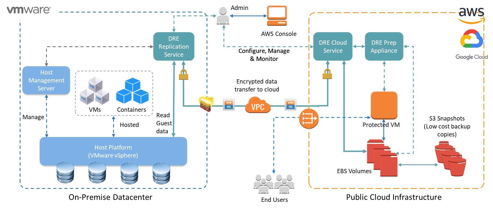
What can you do with Datamotive?
Datamotive currently provides fully functional and intuitive GUI, APIs & Python SDK for performing all supported operations. Once deployed, admins can access the Datamotive GUI by logging in to the Management Server on Protected Site. The URL for accessing the management server is https://<Management_Server_IP_Address>:5000. Default credentials to access the application are administrator/admin.
DR Administrators can perform following set of Day1-DayN operations using the Datamotive GUI. Subsequent sections of this document describe the user interface and related options in detail.
| Category | Action/Activity | Description | Quick Link |
|---|---|---|---|
| Provisioning | Nodes Management | Management of different nodes of Datamotive solution | Nodes Configuration |
| Site Management | Creation and management of protected & recovery sites using the nodes already created | Sites configuration | |
| Protection & Recovery | Protection Plan | Create & manage protection plans for workload protection | Protection Plans |
| Test Recovery | Validate replicated instances through non-disruptive test recovery | Test Recovery | |
| Full Recovery (Fail-over) | Recover protected instances on recovery site | Full Recovery | |
| Migration | Migrate instances from source to target platform | Migration | |
| Reverse (Fail-back) | Reverse/Re-protect VMs to original source | Reverse | |
| Replication/Recovery Jobs | View replication & recovery jobs for their replication statuses | Jobs | |
| Monitoring | Events/Alerts | View, Acknowledge, Take Action on Events & Alerts | Monitor |
| Infrastructure | Monitor & Detect changes in protected instances and take appropriate corrective actions on recovery instance configuration | ||
| User Management | View users of system with their roles & privileges | ||
| Configuration | Bandwidth Throttling | Configure bandwidth usage for changed data transfer | Throttling |
| Email Settings | Configure email settings to enable email notifications for supported alerts | ||
| Tech Support | Manage support bundle creation for troubleshooting purposes | Tech Support | |
| Scripts | User defined custom scripts to be executed during recovery operations | Scripts | |
| License | Manage licenses | License | |
| Users | Manage users | Users | |
| Identity Provider | SAML Authentication | Identity Provider | |
| Upgrade | Upgrading the nodes | Steps for upgrading the nodes | Upgrade |
Support Matrix
Infrastructure
| Component | Support |
|---|---|
| Source Platforms | VMware, AWS & Azure |
| Target Platforms | VMware, AWS, Azure, GCP |
| Workloads | Virtual Machines with directly attached block storage VMware First Class Disks |
| Component | Supported Versions |
|---|---|
| VMware vCenter Server | vCenter Server 6.5 (U3) vCenter Server 6.7 (GA, U1, U2, U3) vCenter Server 7.0 (GA, U1, U2, U3) |
| ESXi Host | ESXi 6.5 (GA, U1, U2, U3) ESXi 6.7 (GA, U1, U2, U3) ESXi 7.0 (GA, U1, U2, U3) |
| VMware Virtual Machines | X-86 based Windows & Linux Guest OSs with BIOS & UEFI boot types |
| AWS | EC2 Instance families based on Intel, AMD & Nitro systems. EBS storage families GP2, GP3, IO-1 & IO-2 |
| GCP | GCP instances based on Intel architecture. Storage families Standard & Balanced types |
| Azure | Virtual Machines based on Intel architecture. Storage families Standard HDD, Standard SSD & Premium SSD |
Guest OSs
| Component | Supported Versions |
|---|---|
| CentOS | 7.8 Kernel Versions: 3.10.0-1127.19.1.el7.x86_64 3.10.0-1127.18.2.el7.x86_64 3.10.0-1127.13.1.el7.x86_64 3.10.0-1127.el7.x86_64 7.9 Kernel Versions: 3.10.0-1160.80.1.el7.x86_64 3.10.0-1160.76.1.el7.x86_64 3.10.0-1160.71.1.el7.x86_64 3.10.0-1160.66.1.el7.x86_64 3.10.0-1160.62.1.el7.x86_64 3.10.0-1160.59.1.el7.x86_64 3.10.0-1160.53.1.el7.x86_64 3.10.0-1160.el7.x86_64 8 Stream 4.18.0-408.el8.x86_64 (ext4 filesystem) 8.2 Kernel Versions: 4.18.0-193.el8.x86_64 4.18.0-193.28.1.el8_2.x86_64 8.5 Kernel Versions: 4.18.0-348.el8.x86_64 4.18.0-348.23.1.el8_5.x86_64 |
| RHEL | 7.8 Kernel Versions: 3.10.0-1127.19.1.el7.x86_64 3.10.0-1127.18.2.el7.x86_64 3.10.0-1127.13.1.el7.x86_64 3.10.0-1127.el7.x86_64 7.9 Kernel Versions: 3.10.0-1160.80.1.el7.x86_64 3.10.0-1160.76.1.el7.x86_64 3.10.0-1160.71.1.el7.x86_64 3.10.0-1160.66.1.el7.x86_64 3.10.0-1160.62.1.el7.x86_64 3.10.0-1160.59.1.el7.x86_64 3.10.0-1160.53.1.el7.x86_64 3.10.0-1160.el7.x86_64 8.2 Kernel Versions: 4.18.0-193.el8.x86_64 4.18.0-193.28.1.el8_2.x86_64 8.5 Kernel Versions: 4.18.0-348.el8.x86_64 4.18.0-348.23.1.el8_5.x86_64 8.6 Kernel Versions: 4.18.0-372.26.1.el8_6.x86_64 |
| Ubuntu | Ubuntu 14: 4.4.0-148-generic Ubuntu 16: 4.15.0-45-generic 4.15.0-142-generic 4.10.0-28-generic Ubuntu 18: 5.4.0-42-generic, 5.4.0-72-generic 5.4.0-91-generic Ubuntu 20: 5.11.0-27-generic |
| Oracle Linux | Oracle 7.8 4.14.35-1902.300.11.el7uek.x86_64 4.14.35-2047.519.2.1.el7uek.x86_64 Oracle 7.9 5.4.17-2102.201.3.el7uek.x86_64 5.4.17-2136.313.6.el7uek.x86_64 |
| Windows | Standard & Datacenter editions of following versions. 2K12 R2 2K16 (Build version 10.0.14393.1198 and above) 2K19 |
| SUSE | SUSE 15 SP3 Kernel version: 5.3.18.57-default 5.3.18-150300.59.106-default SUSE 15 SP2 Kernel version: 5.3.18.22-default |
Client Browsers
| Component | Supported Versions |
|---|---|
| Google Chrome | 99.0.4844.82 99.0.4844.84 107.0.1418.56 107.0.5304.122 116.0.5845.111 127.0.6533.122 (Official Build) (64-bit) |
| Microsoft Edge | 100.0.1185.29 107.0.1418.56 116.0.1938.54 116.0.1938.62 126.0.2592.68 |
| Mozilla Firefox | 98.0.2 127.0.1 |
Features & Workflows
Authentication
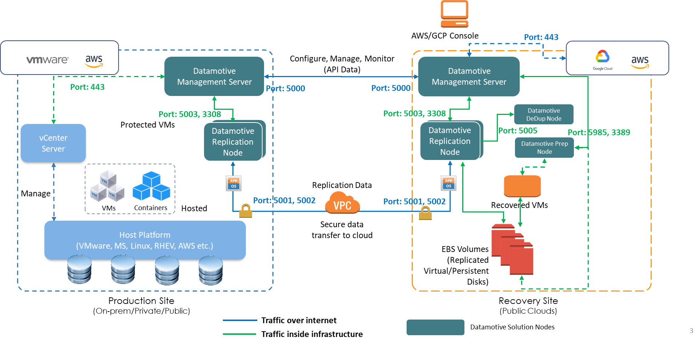
Open the Datamotive UI through URL:
https://<Management_Server_IP_Address>:5000
-
By default, Datamotive will create following four users
-
Administrator
-
DRadmin
-
Guest
-
SupportAdmin
-
-
Default passwords for all the users is ‘admin’
-
Provide the username and password and press Login
-
On successful login, the User will see the Datamotive Dashboard.
**Note: If you are logging in for the first time then for security reasons password change is must.
-
Provide the current password and new password.
-
Click on the change password button to set new password for the system.
Dashboard
The Dashboard provides you with an at-a-glance overview of the data protection status of your environment. The Dashboard contains the following features.
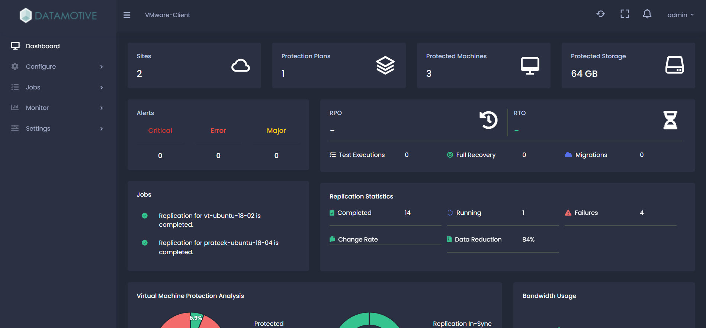
Title Panel
Title panel will provide overall information on your configured and protected environment.
| Title | Description |
|---|---|
| Sites | Sites configured on the node. |
| Protection Plans | Total number of Protection plans configured. |
| Protected Machines | Total number of protected virtual machines or instances |
| Storage | Overall protected storage size. |
Alerts
Active/Unacknowledged alerts which need a user action acknowledgement or action.
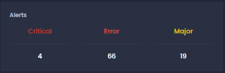
RPO and RTO
Shows information about currently configured Recovery Point Objective (RPO) and Recovery Time Objective (RTO).
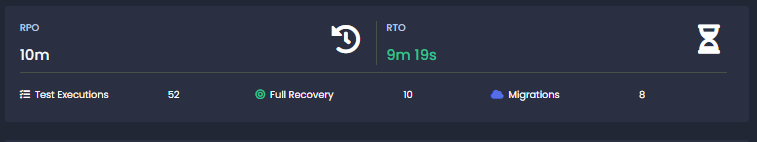
| Title | Description |
|---|---|
| RPO | Average recovery point objective (RPO) value |
| RTO | Average of recovery time Objective (RTO) value |
| Test Executions | Total number of test recovery executed (this includes Failed/Successful or Partially completed). |
| Full Recovery | Total number of virtual machines recovered successfully (this includes Failed/Successful or Partially completed). |
| Migrations | Total number of virtual machines migrated successfully (this includes Failed/Successful or Partially completed). |
Replication Statistics
Replication statistics provides an overview of replication jobs about the protected environment.
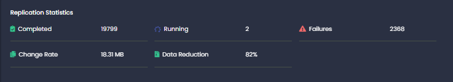
| Label | Description |
|---|---|
| Completed | Total number of replication iterations completed successfully |
| Running | Replication iterations which are currently active/running. |
| Failed | Total number of failed replication iterations. |
| Change Rate | Average data change rate for all protected virtual machines |
| Data Reduction | Average percentage of data reduction for all the completed replications which has compression enabled. |
Jobs
Jobs section shows the information about the latest jobs started or completed in the system.
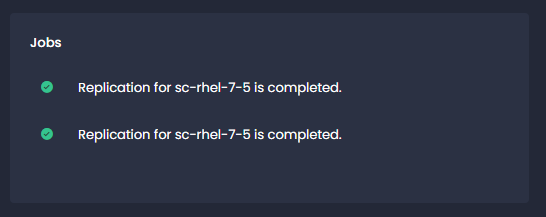
Virtual Machine Protection Analysis
Virtual machine protection analysis shows the overall status of protected site environment in terms of total discovered virtual machines with percentage of protected and unprotected virtual machines. In addition to protection analysis, this wizard also provides the details for replication statistics of virtual machines which are in-sync and not in-sync.
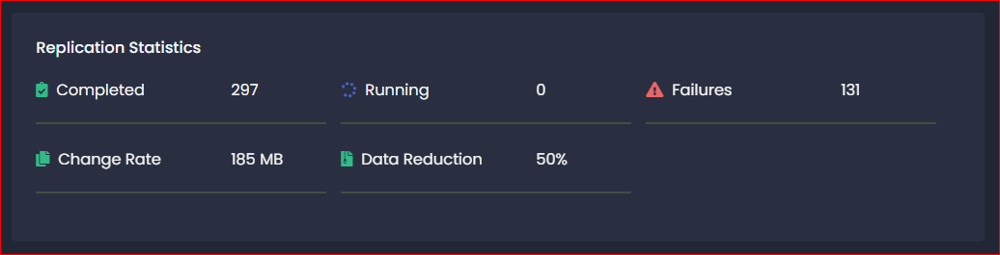
Bandwidth Usage
Bandwidth usage provides detailed network usage which is downloaded and uploaded using the nodes for the last 12 hours.

Site Connections
Provides connection details of configured sites in terms of data flow i.e., from which source site data is replicating to the target site.
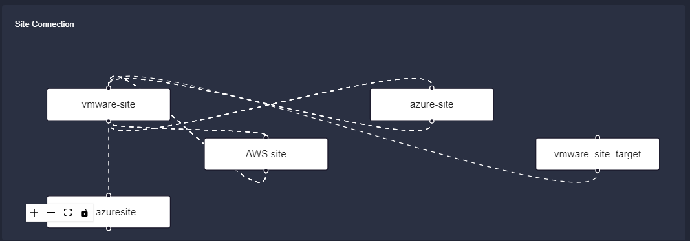
Events
Events are records of user actions or system actions that occurred in the Datamotive system. The Events widget provides most recent 5 events generated in the system.

Nodes
This section displays all the nodes registered with the management node along with their status. This is a snip of how different nodes are configured in the Datamotive UI.
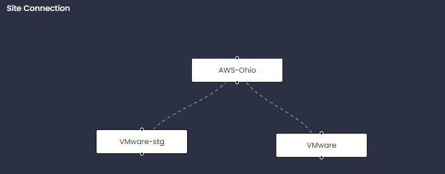
Nodes Configuration
Nodes are entities where the Datamotive server is installed (Ex. AWS, GCP, VMWare, Azure, etc.). Datamotive Nodes are of different types like Management, Replication, Dedupe & Win Prep. Each node has a specific functionality.
-
Management: Node for performing Datamotive management operations. There must be one and only Management node for each site (vCenter Server for VMware & a Region/Zone in Cloud). Management also has a replication engine which allows it to perform the replication operations too.
-
Replication: Nodes responsible for performing replication activities. These can be added based on the number of Virtual Machine disks to be replicated in parallel. Replication nodes can be added to meet the requirement for large-scale environments.
-
Dedupe: This is a special type of node required to support deduplication. This node is required only on the Recovery site.
-
Win Prep: This is also a special type of node which is required to perform the windows recovery operations only.
For all the nodes, Datamotive provides separate images, OVAs for VMware & Cloud-specific machine images. Once a Node of a given type is deployed in the infrastructure, it needs to be added in the Datamotive Management server. Nodes must be deployed and configured in the following manner-
-
Management Node: Deploy 1 management node per protected site. The local node representing the management node automatically gets registered.
-
Remote Management Node: Deploy 1 management node per recovery site. Register the management nodes from Recovery Site in Management Node of Protected Site.
-
Replication Nodes: Deploy replication node based on load. Once deployed register replication node in the local management server. Replication nodes are always added to local management node only.
Currently, Datamotive supports replication of 40 virtual disks per replication
node.
-
Dedupe Node: Deploy the Dedupe node on Recovery Site. Once deployed, register the Dedupe node with Management Node on the Recovery Site.
-
Win Prep Node: Deploy the Win Prep node on Recovery Site. Once deployed, register the Win Prep node with Management Node on the Recovery Site.
To Access Node option, Go to Configure -> Nodes (Note- By default the Local node will be configured.)
To add new node -
Click On “+ New” option as shown below –
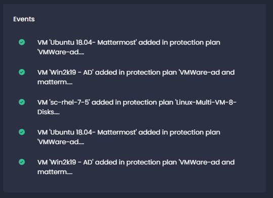
It consists of the below options-
| Name | Name to identify the node. For all other nodes, the name must be same as that of name of the VM where this node is deployed. |
| Hostname | This is FQDN or IP address of the server |
| Username | This is the username of the Datamotive Engine |
| Password | This is the password of the Datamotive server |
| Type | The type of Datamotive server which is being added. Type consists of 4 options - Management, Replication, Prep Node and Dedupe Server |
In Type select the appropriate option from the drop down -
| Type | Description |
|---|---|
| Management | The management server |
| Replication | Used for replicating the changed data from source to target & during recovery operations |
| Prep Node | Prep Node is used when you would want to recover the Windows virtual machines |
| Dedupe Server | Used for de-duplication of data |
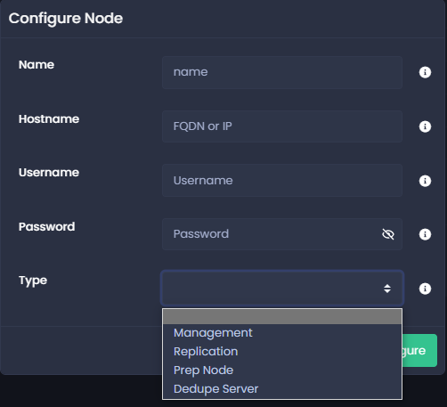
(Note – Based on the selection of Type, further details need to be entered). Ex. In option, the management type is selected. It consists of the below options –
| Platform Type | Platform where the node is deployed |
| Management port | Port on which the management service runs (By default, it 5000) |
| Replication Data Port | Port on which the replication data service runs (By default, it 5001) |
| Replication Controller Port | Port on which the replication controller service runs (By default, it 5003) |
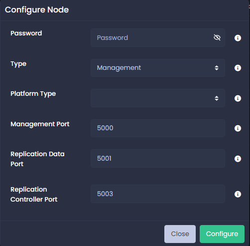
After filling in all the required details, click Configure to save the node.
After the nodes are configured, if there is a mismatch in the node
versions of source and target “click to upgrade” option can be
used to upgrade that node. Also, a warning message will be shown on the
management node if there is a version mismatch as shown below -
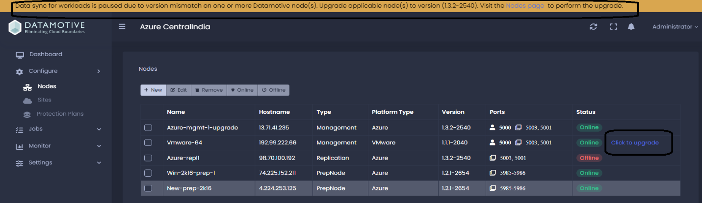
***Note – If there is a version mismatch for the nodes, the replications would be on hold until the node versions are not same. Once the nodes are on the same version, the replications will resume.
Sites Configuration
Sites are infrastructure where the source or target workloads reside. Site consists of platform type and platform details. In the Datamotive UI, go to Configure tab (on the left-hand side panel) -> Sites.

Create Site
To create a site, click the “+ New” button and the Create site window will pop up.
The common inputs are-
| Name | Desired name to identify the site |
| Description | Short information about the site |
| Site Type | (Protect/Recover) - Select the site type based on source or
destination. Recover - A Recover site is where the protected entities need to be recovered. |
| Platform Type | Select the Platform type - VMware/AWS/GCP/Azure |
| Node | Select the node based on the Platform type where the workloads are hosted (Note: Based on the platform type and node selection the options change) |
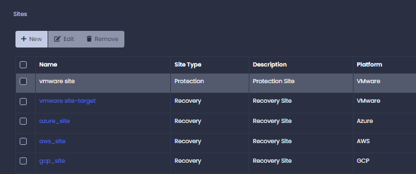
Platform Specific Parameters:
| Platform Type | Parameter | Description |
|---|---|---|
| VMware | vCenter Server IP | Enter the vCenter Server IP address where the workloads are hosted |
| Port | Enter the Port on which vCenter Server is running (Default is 443) | |
| Username | Enter the vCenter Server username | |
| Password | Enter the vCenter Serer password | |
| AWS | Region | Select the desired region where the workloads will be Protected/Replicated/Recovered |
| Zone | Select the desired zone in the region where the workloads will be replicated/recovered | |
| Access Key | AWS User Access Key | |
| Secret Key | AWS User Secret Key | |
| GCP | Region | Select the desired region where the workloads will be replicated/recovered |
| Zone | Select the desired zone in the region where the workloads will be replicated/recovered | |
| Project ID | Enter the project id from the GCP console | |
| Azure | Region | Select the desired region where the workloads will be replicated/recovered |
| Subscription ID | Enter the Azure subscription ID | |
| Storage Account | Enter the Azure storage account used for target VM storage | |
| Tenant ID | Enter the Azure AD App Tenant ID | |
| Client ID | Enter the Azure AD App Client ID | |
| Secret Key | Enter the Azure AD App client secret key |
After giving all the details, click on Configure to create the site and on successful creation, the site will be listed in the list view as below -
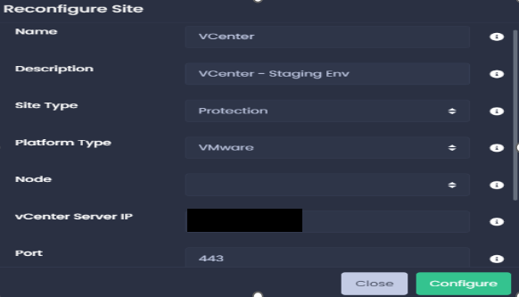
Edit Site
To Edit the site, first select the desired site and then click the "Edit" button. This will display the edit site wizard. Modify the necessary information and then click "Configure" to save the changes.

Remove Site
To delete one or more sites, select the site(s) you wish to remove and click on the Remove button. Then, click on the Confirm option to complete the deletion.
***Note – Before removing a site, ensure that it is not part of any protection plan, as sites used to create protection plans cannot be removed.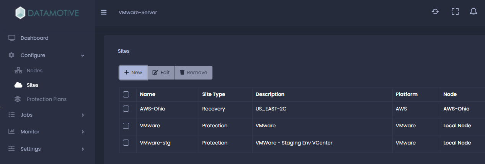
Protection Plans
Protection Plans are the logical groups for protecting the workloads. Protection Plans define source & target sites, virtual machines to be protected, their boot orders, replication schedule, recovery configuration for the virtual machines. All these steps are configured using a wizard. Based on this information, Datamotive performs the replication & recovery operations.
Create Protection Plan
To create a new protection plan, click on + New button in protection plan list, create protection plan wizard is shown. Follow the guided steps to configure the protection plan.
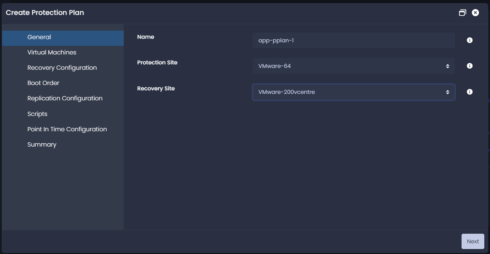
Prerequisites
VMware platform:
- VMware tools must be installed in all the Virtual Machines which need to be protected.
Step 1: General
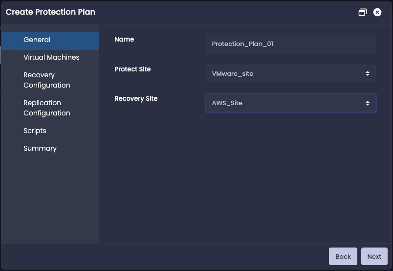
| Name | Desired name of the protection plan |
|---|---|
| Protection Site | Source protection site |
| Recovery Site | Destination recovery site |
Step 2: Virtual Machines
Select the virtual machines to be protected and click next. Use search to find virtual machines.
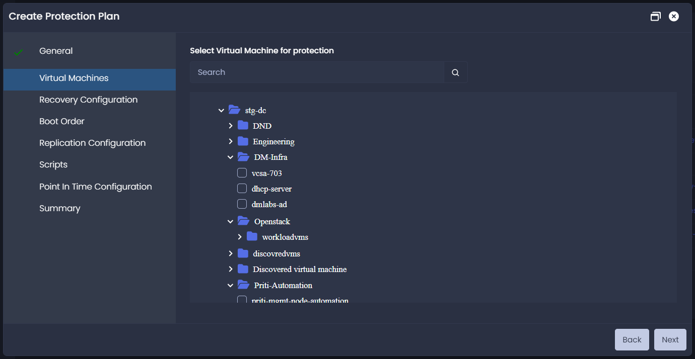
Once the virtual machines are selected, a pop up will appear which would seek permission to enable the cbt(change block tracking) automatically.
***Note – Enabling CBT is essential for the vms to be replicated to the target site for vmware as a source.
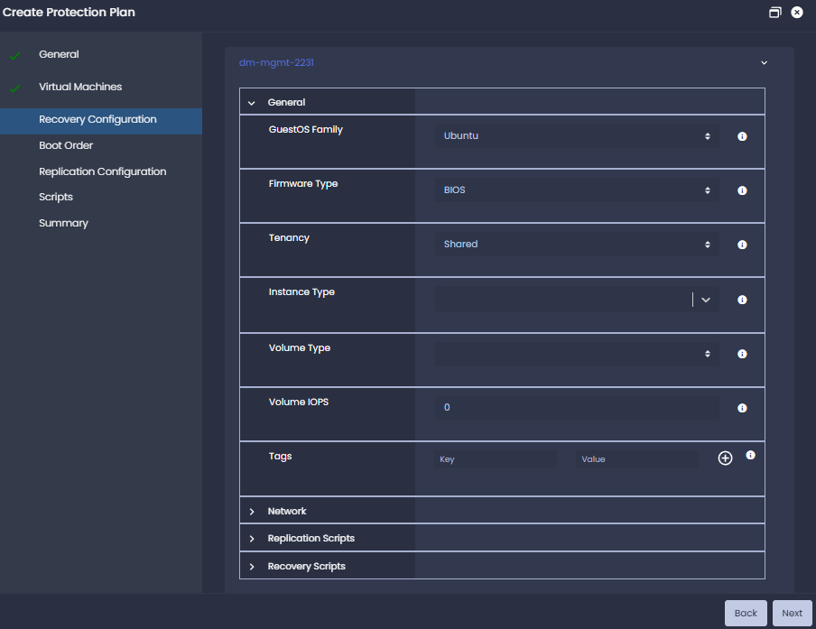
Click on Enable CBT and continue to enable the CBT for the selected virtual machines
Step 3: Recovery Configuration
Provide the virtual machine specific recovery configuration which will be used for creation of instance on recovery site. Recovery configurations vary based on Recovery Site Type. To configure the protected virtual machine the options below are used.
General
Based on target platforms, the following inputs are required. All the values which are available and supported on the target site will only be displayed as an option to proceed further.
For AWS as target platform, the user must provide selection for following fields -
| GuestOS Family | The operating system is automatically detected based on the protected entity. If the detected OS is incorrect, users can select the correct one from the dropdown menu. |
| Firmware Type | The instance firmware type is automatically detected based on the protected entity. If the firmware type is not detected, user can manually select it from a dropdown, the options are either BIOS, UEFI, UEFISecure, UEFISecurevTPM or UEFIvTPM |
| Tenancy | Shared Tenancy: Instances run on shared hardware with other customers. Ideal for cost-effective, standard workloads. Dedicated Host: Provides a physical server dedicated to your use. Suitable for compliance, licensing needs, or specific hardware requirements, associated AMI is compulsory with dedicated host. |
| Target Host by | Host: to deploy instance on a dedicated host. Host Resource Group: to deploy instance on the host resource group, in this case depending on instance configuration dedicated host will be auto selected. |
| Target Host ID / Target Host Group Arn | To Deploy workload on Dedicated Host, provide the Dedicated Host ID. To Deploy workload on Host Resource Group, provide the Host Resource Group ARN. |
| Target Affinity | When affinity is set to Host, an instance launched onto a specific host always restarts on the same host if stopped. |
| Associated AMI | AMI ID to be used for deploying the recovery instance |
| License Manager | ARN of the License configuration license configurations are AWS License Manager rule-sets that are associated with instances at launch to enforce license compliance. If no value is specified, the value of the AMI will be used if associated. |
| Instance Type | Instance type on cloud site – Example- t2.micro for AWS |
| Volume Type | Instance volume type on cloud site. Example- GP-2 for AWS or standard persistent disk for GCP or premium SSD for Azure |
| Volume IOPs | IOPs value for supported Volume Types. Please note that the IOPs values are submitted for volume creation without validation. Make sure that all the rules specific to selected volume type are followed while specifying the IOPs value |
| Encryption KMS Key | The AWS Key Management Service (KMS) is a comprehensive solution for creating and maintaining encryption key to source your data. Once encryption key is enabled for an instance, it cannot be reversed, additionally disk encryption on the target depends on the source disks being encrypted. **Note – This option is only available for AWS as a source and target |
| Tags | Tags that are assigned to the instance. Example – Tag Key – Name,
Tag value – dm-repl-node **Note – This option is only available for AWS as a source and target |
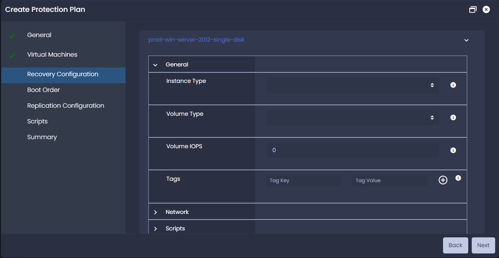
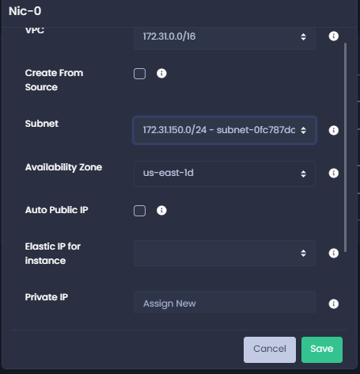
For VMware as target platform, the user must provide selection for
following fields-
| GuestOS Family | The operating system is automatically detected based on the protected entity. If the detected OS is incorrect, users can select the correct one from the dropdown menu. |
| Firmware Type | The instance firmware type is automatically detected based on the protected entity. If the firmware type is not detected, user can manually select it from a dropdown, the options are either BIOS, UEFI, UEFISecure, UEFISecurevTPM or UEFIvTPM |
| Location | Folder in target vCenter server where the VM needs to be placed |
| Compute | ESXi Host (standalone) or ESXi Host Cluster where the VM needs to be deployed |
| Storage | Datastore (standalone) or Datastore Cluster where the VM’s all the disks will be placed |
| CPU | Number of vCPUs to configure for the VM |
| Memory | Amount of memory to be configured for the VM |
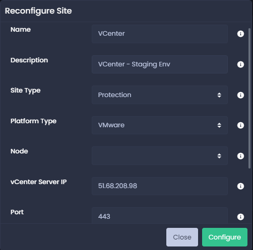
For Azure as target platform, the user must provide selection for following fields-
| GuestOS Family | The operating system is automatically detected based on the protected entity. If the detected OS is incorrect, users can select the correct one from the dropdown menu. |
| Firmware Type | The instance firmware type is automatically detected based on the protected entity. If the firmware type is not detected, user can manually select it from a dropdown, the options are either BIOS, UEFI, UEFISecure, UEFISecurevTPM or UEFIvTPM |
| Resource Group | Resource group in target Azure subscription |
| Availability Zone | Availability zone in which the VM will be deployed |
| VM Size | Virtual Machine size on Azure cloud – Example Standard_B2s |
| Volume Type | Virtual Machine volume type on Azure cloud – Example Premium SSD |
| Tags | Virtual Machine tags. Example – Tag Key – Name Tag value |
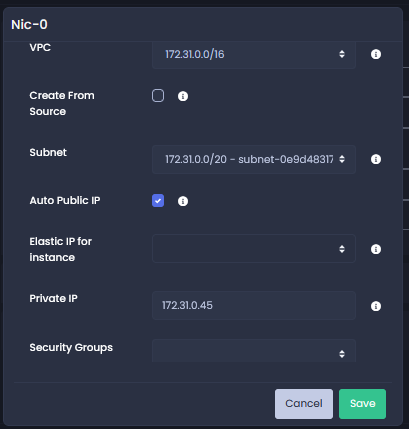
For GCP as target platform, the user must provide selection for following fields-
| GuestOS Family | The operating system is automatically detected based on the protected entity. If the detected OS is incorrect, users can select the correct one from the dropdown menu. |
| Firmware Type | The instance firmware type is automatically detected based on the protected entity. If the firmware type is not detected, user can manually select it from a dropdown, the options are either BIOS, UEFI, UEFISecure, UEFISecurevTPM or UEFIvTPM |
| Instance Type | Instance type on cloud site. Example n1-standard-1 |
| Volume Type | Virtual Machine volume type on GCP cloud – Example Standard Persistent Disk |
| Meta data | Virtual Machine’s metadata (Tags). Example – Tag Key – Name Tag value- app-server |
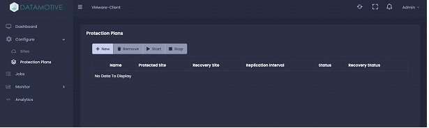
Copy Recovery Configurations
The above option allows the user to copy recovery configurations from the first virtual machine to all the other virtual machines in the protection plan.
-
Select Virtual Machines: This will provide option to select the virtual machines on which we want to copy recovery configuration
-
Select Configuration: This will provide option to select which recovery configuration we want to copy to the selected virtual machines
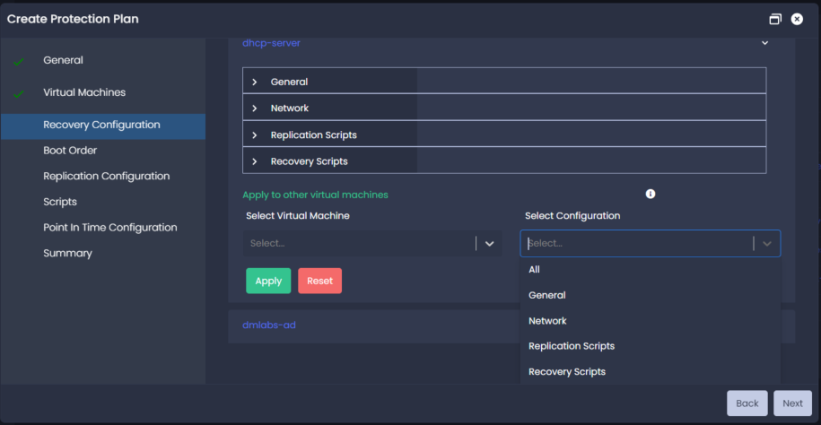
Network
The network configuration wizard opens based on the type of the target platform
For AWS platform as recovery site, the following configuration options are provided-
| VPC | Select the desired VPC where the recovery entity would reside |
| Create from Source | This option is used when you need to copy the network configuration from the source instance. All the options like subnets, IP address and security groups get auto filled as the source instance. **Note - This option will be available only in case of AWS as a source and target |
| Subnet | Select the desired subnet within the selected VPC. |
| Availability Zone | Based on the selected subnet the availability zone for the subnet is auto detected |
| Auto Public IP | Click on the checkbox if you want to auto assign a public Ip to instance. **Note – In the case of multi-nic, only one network interface I.e., NIC 0 can be configured if public IP is enabled. |
| Elastic IP | Select from allocated elastic IP address pool if any. |
| Private IP | Provide the internal IP address for the instance or leave blank for auto assignment. *Note - Specify Private IP in the same range as that of given Subnet and which should be unique |
| Security Groups | Select the desired security groups from the drop down that has all the required inbound and outbound rules for the instance. |

For GCP platform, the user must provide selection for following fields -
| Network | Select the desired network which will be assigned to the recovery instances |
| Subnet | Select the desired subnet which will be assigned to the recovery instances |
| Private IP | Provide the internal IP address for the instance or leave blank for auto assignment. **Note - Specify Private IP in the same range as that of given Subnet which should be unique |
| External IP | Based on following options, select the IP address required for that network interface-
|
| Network Tier | Network Service Tiers lets you optimize connectivity between systems on the internet and your Google Cloud instances. Premium Tier delivers traffic on Google's premium backbone, while Standard Tier uses regular ISP network. |
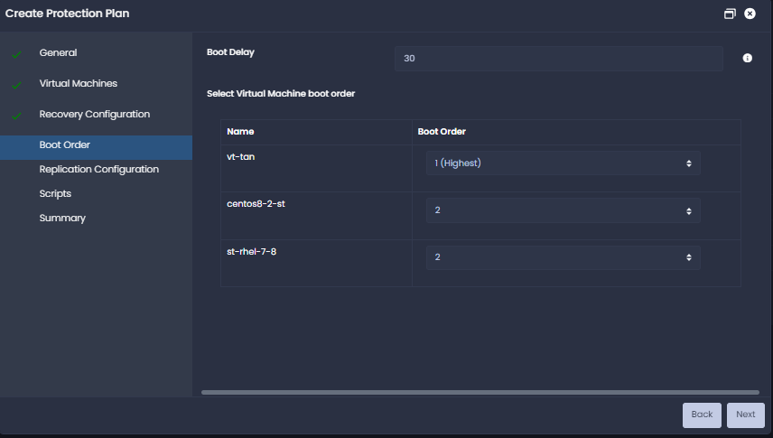
| Network Tags | Select the network tags which has required inbound and outbound ports allowed |
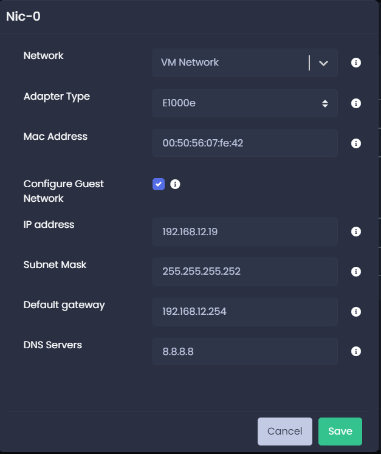
For VMware as recovery platform, the following network configuration options are required-
| Network | Select the desired network which will be assigned to the recovery vm’s |
| Adapter Type | Adapter type to be configured to the Virtual Machine. This is a complete list of vSphere-supported adapter types. User must carefully select the appropriate adapter that is available in his setup |
| Mac Address | Assign a specific Mac Address to a NIC of the VM. When left empty, default Mac Address is assigned by vCenter Server |
| Configure Guest Network | Select this option if you want to configure static IP address to
a NIC of the VM. The source VM should have nmcli package available. |
| IP Address | IPV4 address to be assigned to the VM |
| Subnet Mask | Subnet mask as applicable from the network |
| Default Gateway | Default gateway as applicable from the network |
| DNS Server | One or more DNS servers specified in a comma separated list. Ex. 8.8.8.8, 8.8.4.4 |
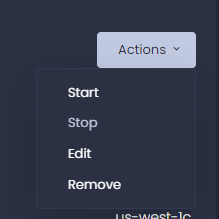
For Azure platform as recovery site, the following configuration options are provided-
| Virtual Network | Virtual Network enables you to launch Azure VM into a virtual network that you've defined. |
| Subnet | Subnet ID which will be assigned to the VM in this protection plan. |
| Private IP | Provide the internal IP address for the VM or leave blank for auto assignment. **Note - Specify Private IP in the same range as that of given Subnet which should be unique |
| Public IP | Select any public IP from the pool or select auto for dynamic IP assignment |
| Security Groups | Select the desired security group from the drop down that has all the required inbound and outbound rules for the virtual machine |

Replication Scripts
Datamotive supports executing custom scripts at various levels to allow all the customizations users need for replication & recovery workflows. The scripts are supported for individual VM, and complete protection plan as well. The scripts are available as both, pre and post hooks. To use pre or postscripts, upload the pre & postscripts to Datamotive management node on both protected & recovery sites using scripts section in settings or that can be uploaded from the upload new script section in the replication section. Once the scripts are uploaded, they will be visible in the pre and post replication scripts option. Datamotive currently supports Python 3.x, Golang & Shell executable scripts. All the scripts must be in the form of executables to work. E.g., they should get executed as ./<script_file_name>. Scripts are supported at the following levels. The scripts are also executed in the below order during replication & recovery operations.
| Script Type | Execution Level | Script | Description |
|---|---|---|---|
| Replication | Protection Plan | Pre-Script | Executed in each replication iteration as a first step. |
| Virtual Machine | Pre-Script | Executed in each replication iteration before every virtual machine’s snapshot is taken | |
| Virtual Machine | Post-Script | Executed in each replication iteration after virtual machine’s snapshot is completed | |
| Protection Plan | Post-Script | Executed in each replication iteration after all the virtual machine’s snapshot operation is completed | |
| Recovery | Protection Plan | Pre-Script | Executed during Test/Full Recovery & Migration operations as a first step |
| Virtual Machine | Pre-Script | Executed before starting recovery of every virtual machine | |
| Virtual Machine | Post-Script | Executed after every virtual machine is recovered | |
| Protection Plan | Post-Script | Executed after completion of recovery operation for all virtual machines. |
Following screens show options where user can select/upload various scripts-
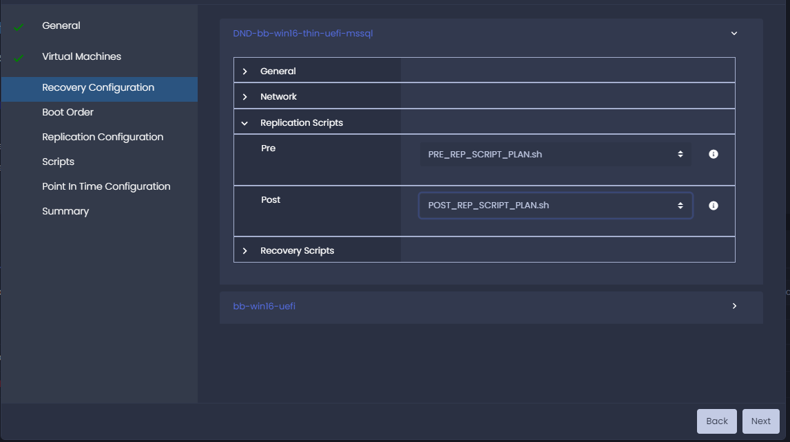
Scripts Input
Currently, Datamotive supports only binary for execution. The runtime available for scripts is Shell, Bash, Powershell, Python 3.x & Golang. On invocation of the recovery scripts, Datamotive provides the following parameters in the order.
Pre-script: <None>
Post-script: JSON string with following format
{
[
{
“Name”: <VM Name>,
“SourceID”: <Platform ID of source VM>,
“TargetID”: <Platform ID of recovered VM>,
“NetworkInfo”: [{
“PublicIP”: <Public IP if assigned to recovered VM>,
“PrivateIP”: <Private IP if assigned to recovered VM>
}],
“Credentials”: {
“Username”: <Login username of the recovered VM>,
“Password”: <Login password of the recovered VM>
}
}
]
}
Scripts Output
The scripts are checked for its completion and the process exit status is captured. If there are no errors in executing the script, Datamotive considers it to be successfully executed. If there are errors, the recovery jobs for that particular VM or protection plan is marked as Partially Completed.
Step 4: Boot Order
Using boot order configuration defines the boot delay and virtual machine boot order.
Boot Delay : Delay in seconds between virtual machines specified in the boot order.
Boot Order : Order in which virtual machines will get recovered or migrated. Workloads with the least number will boot first.
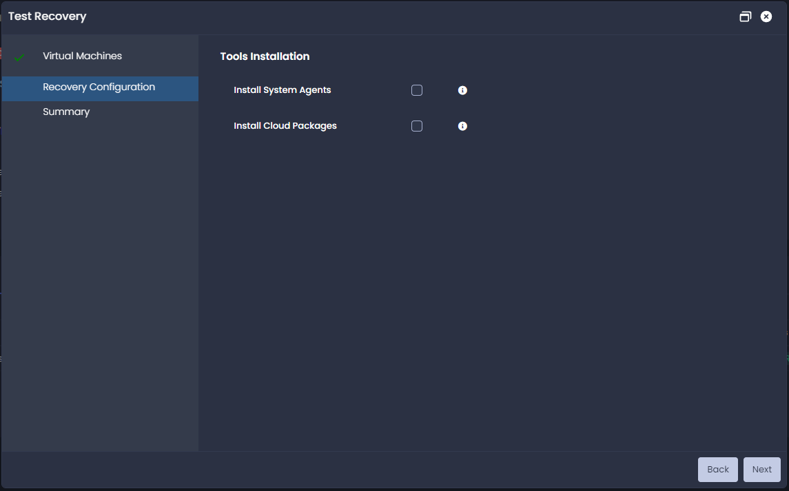
Step 5: Replication Configuration
Replication configuration allows user to specify the schedule for periodic replication of protected virtual machines. User can configure following parameters.
| Start Time | Time from when protection plan replication will start. |
| Replication Interval | Time interval in which the virtual machine’s changed data will be replicated. |
| Encryption on Wire | Data encryption while transferring from source to destination. |
| Compression | Data compression while transferring from source to destination |
| Dedupe | Enables the data deduplication. **Note: Deduplication node should be pre-configured on recovery site before using this feature |
| Differential Reverse Replication | Enable this feature if you want to allow recovered machines from the recovery site to replicate back to their original source site. |
| Synchronize All VM Replication | Enables all virtual machines in this protection plan to be replicated with similar sync time. Without this option a virtual machine will try to get scheduled at the configured RPO, irrespective of the virtual machine status |
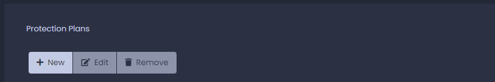
Note : This pertains to AWS as the target. If more than 100 virtual machines are replicated in parallel, replication may fail for snapshot creation due to AWS platform limitations (100 snapshots can be in a pending state across the account). Therefore, VM replications will be scheduled based on priority.
Advanced Configuration -
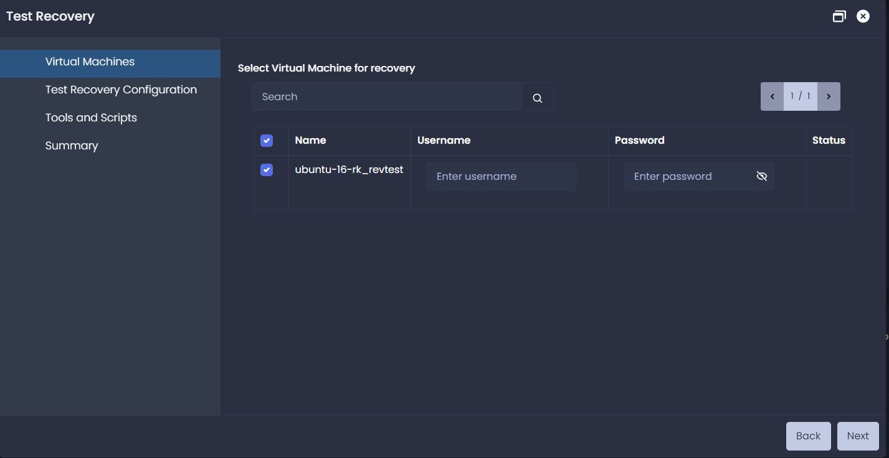
Quiesce Guest OS * - This option is used to quiesce the snapshots for VMware as a source. Once the user clicks on the configure option, the quiescing is by default enabled for effective replication and can be disabled manually by the user.
Replication Priority **-
User can set the replication priority for the vm’s based on the need.
* - VMware as a source.
** - AWS as a target
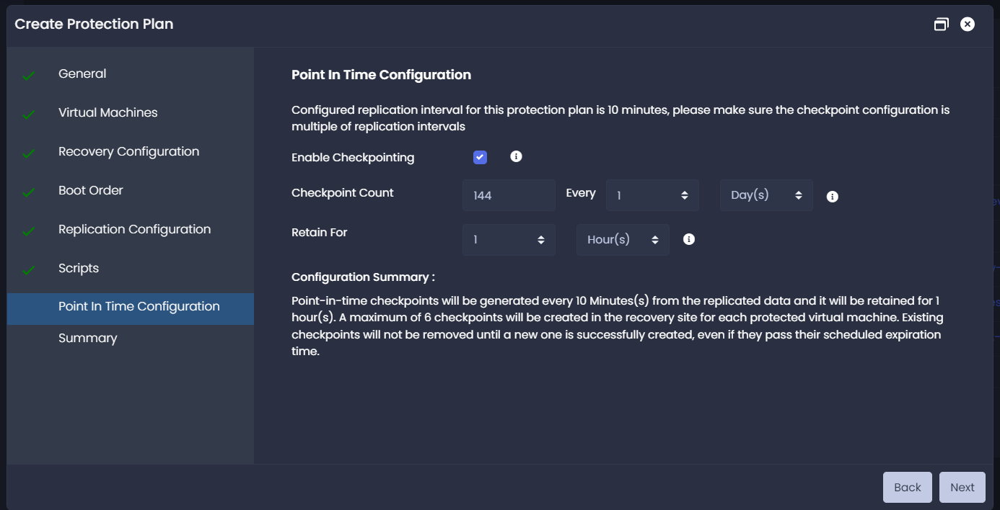
Step 6: Scripts
As described in earlier scripts section, these are Replication & Recovery scripts at Protection Plan level.
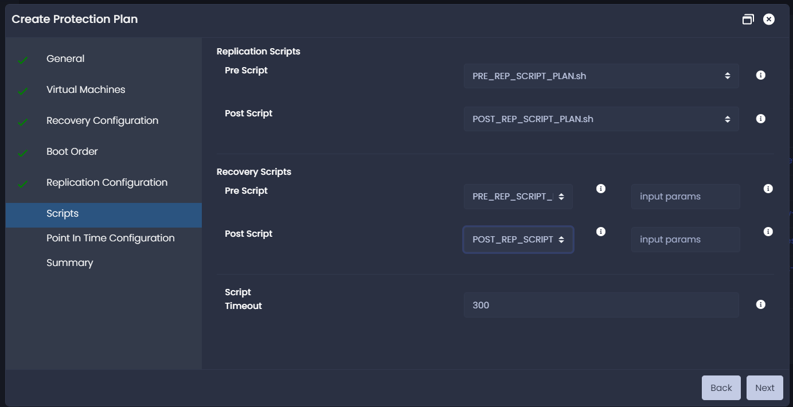
The runtime available for scripts is Shell, Bash, Python 3.x & Golang. On invocation of the recovery scripts, Datamotive provides the following parameters in the order.
Pre-script: <None>
Post-script: Post script gets 3 ordered parameters
- Recovered VM information: JSON string with following format
-
User Inputs: As provided by user.
-
Output of Recovery Pre-Script: JSON string with following format
{"vms":[
{
"name":<VM Name>,
"sourceID":<Platform ID of source VM>,
"targetID":<Platform ID of target VM>,
"ips":[
{"publicIP":<Public IP if assigned>, "privateIP":<Private IP is assigned>}
],
"credentials":{
"username":"<Recovered VM logon username>",
"password":<Recovered VM logon password>
}
}
]
}
{"status":"","code":0,"message":"","data":""}
Script timeout: This is the time in seconds at which the script would timeout. By default, it is 300 seconds (about 5 minutes) and can be changed.
Step 7: Point In Time Configuration
These are the checkpoints(snapshots) captured during the active replication cycles on the target site.
| Enable Checkpointing | Tick the box to enable/disable the checkpointing |
| Checkpoint count | Denotes number of checkpoints to be taken |
| Every | Denotes number in Days/Weeks/Month/Year |
| Retain for | Denotes the time to retain the checkpoints in target infrastructure. |
**Note- The point in time configuration is in accordance with the RPO configured. Once all the configuration is correct and in accordance with the RPO a configuration summary will be visible about the point in time configuration.
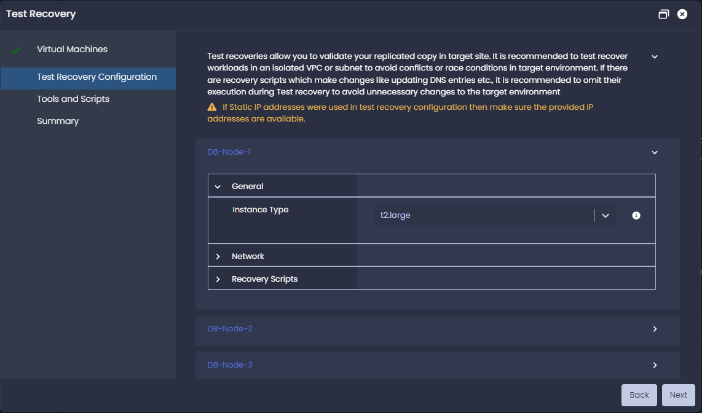
Step 8: Summary
Review the summary for the protection plan and click finish to configure the protection plan. On successful configuration, replication jobs will start for the virtual machines selected for this protection plan.
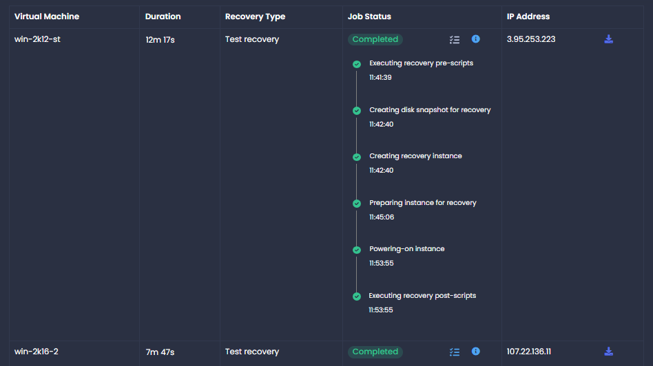
Playbooks
Playbooks enable users to set up protection plans by uploading an Excel file. After uploading, the document undergoes validation. Once the validation is successful, a protection plan will be created based on the inputs from the Excel file.
Datamotive offers a template for each supported cloud infrastructure platform.
Playbooks has three options:
| Generate | Used to create playbook template |
| Upload | Used to upload playbook template |
| Remove | Used to remove playbook template **Note – Playbook associated with any active protection plans cannot be deleted |
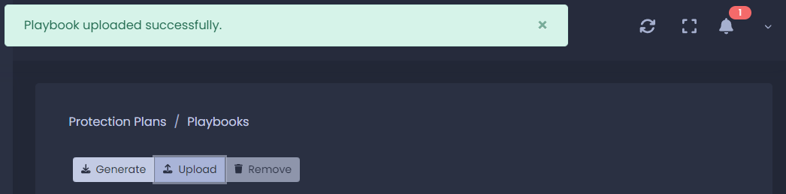
Generate:
This option creates a playbook template. Click on generate, select the protection Site and Target Site and based on the selected protection site, the vm’s will be visible. Select the desired vm’s and click on Generate and Download to generate the playbook.
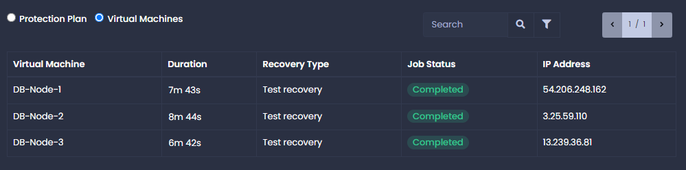
An excel file in .xlsx format is downloaded.
Upload:
When the sample template is downloaded, fill in the data and use the upload option to upload the playbook.
Click on upload option and select the desired playbook template to be uploaded to the Datamotive UI.
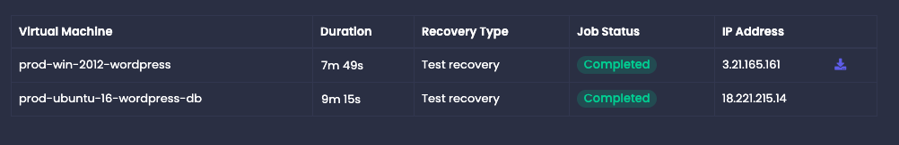
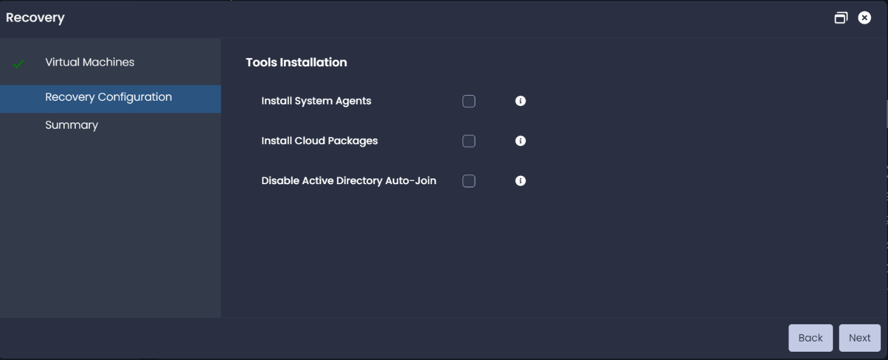
Once the playbook is uploaded successfully, the playbook needs to be
validated using the validate option-
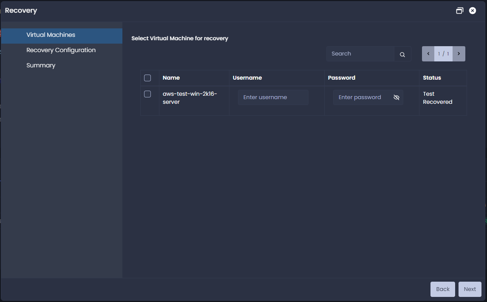
Once the validation is complete, click on configure option to create the protection plan
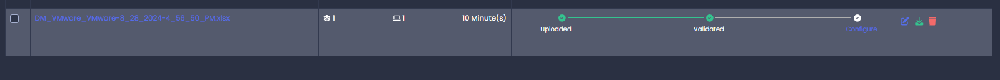
Once the protection plan is configured it can be viewed in the protection plans options. To Edit the playbook, use the edit icon (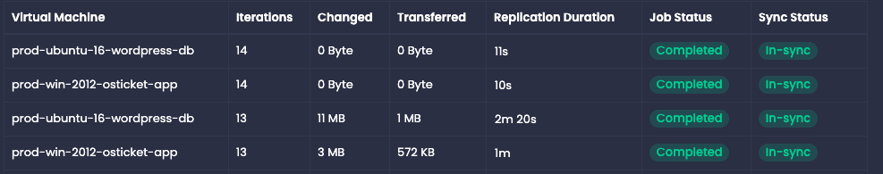), to download the playbook use the download icon () and to delete the playbook use the remove option ( )
Remove:
To remove a particular playbook, select it and click on it to be removed.
**Note – Playbook associated with any active protection plans cannot be deleted
Protection Plans Wizard:
After the protection plans are configured, every detail regarding that Protection plan can be visible when clicked on the protection plan name
| Protection Site | The information about the protected site |
| Recovery Site | The information about the Target site |
| Virtual Machines | Virtual machines added to the protection plan |
| Configuration | The information about configuration of the protection plan |
| Point in Time Checkpoints | Information about the available checkpoints and preserved checkpoints |
| Replication Jobs | The information about replication of vm's in the protection plan |
| Point In time Jobs | Information about all the checkpoints |
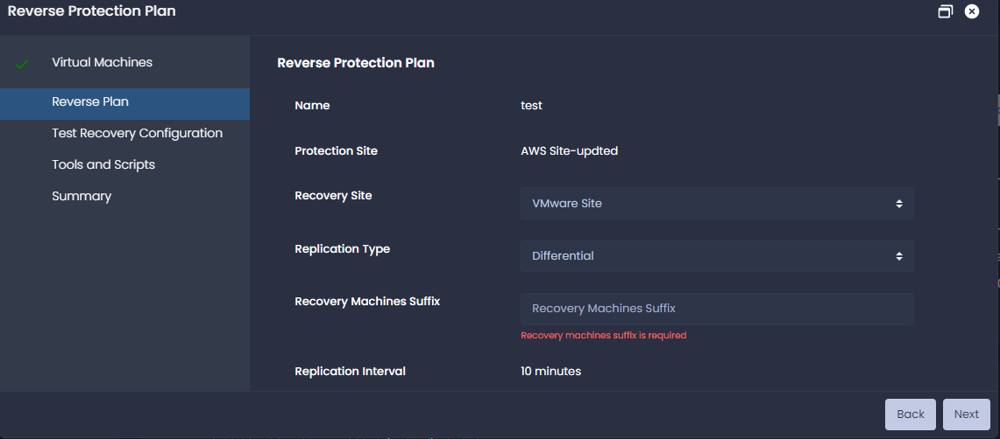
Virtual Machines:
This gives all the information about the virtual machines that are protected in the protection plan. There are two sections in the virtual machines tab –
- Protected Machines - This gives all the required information about the protected virtual machines -
| Name | Name of the virtual machine as that in the source |
| Size | Size of the disks associated with the virtual machines |
| Disks | Number of Disks associated with the virtual machines |
| OS | Operating system of the virtual machine |
| Last Run Time | Time at which the latest test recovery/recovery or migration is done |
| Status | Latest recovery state (ex. Test Recovered, Recovered, Migrated) |
| Actions 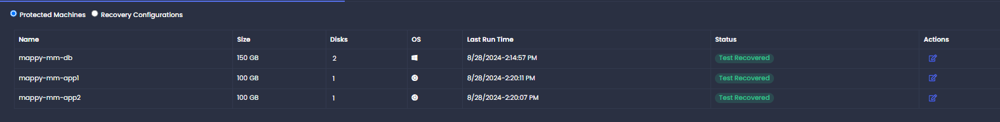 | To edit the recovery configuration of that particular virtual machine |
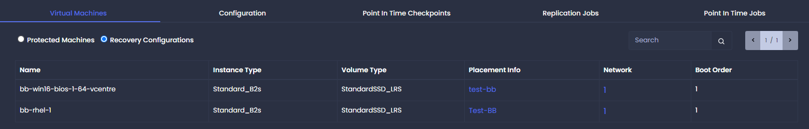
- Recovery Configurations - This gives information about the recovery configuration for the protected virtual machines
For VMware as a target, below is the recovery configuration information shown -
| Name | Name of the virtual machine as that in the source |
| Instance type | CPU's and Memory allocated to the virtual machine |
| Placement Info | Location/Folder where the recovery entity is placed |
| Network | Number of NIC (network interfaces) attached to the virtual machines. To see the information about the network, hover over the network option |
| Boot Order | Boot order of the virtual machines |
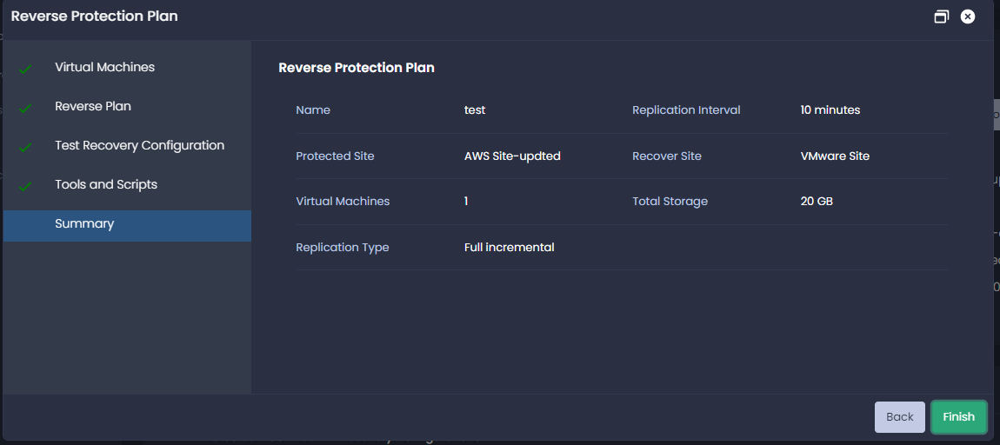
For AWS as a target, below is the recovery configuration information shown -
| Name | Name of the virtual machine as that in the source |
| Instance type | type of instance selected during protection plan creation (ex. t2.large) |
| Volume Type | Type of volume used during the creation of protection plan (ex. gp2,io-1,etc) |
| Network | Number of NIC (network interfaces) attached to the virtual machines |
| Boot Order | Boot order of the virtual machines |
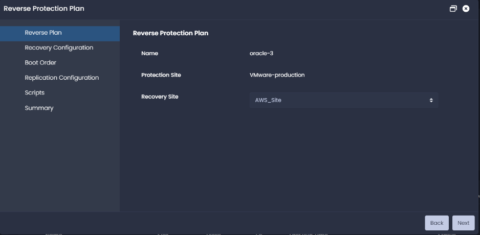
For Azure as a target, below is the recovery configuration information shown -
| Name | Name of the virtual machine as that in the source |
| Instance type | type of instance selected during protection plan creation (ex. b2ms) |
| Volume Type | Type of volume used during the creation of protection plan (ex. StandardSSD,etc) |
| Placement info | Resource group in which the protected entity needs to be recovered |
| Network | Number of NIC (network interfaces) attached to the virtual machines |
| Boot Order | Boot order of the virtual machines |
For GCP as a target, below is the recovery configuration information shown -
| Name | Name of the virtual machine as that in the source |
| Instance type | type of instance selected during protection plan creation (ex. e2-standard-2) |
| Volume Type | Type of volume used during the creation of protection plan (ex. persistent disk,etc) |
| Network | Number of NIC (network interfaces) attached to the virtual machines |
| Boot Order | Boot order of the virtual machines |
Configuration:
This displays information about settings configured during the protection plan creation.
Point In time Checkpoints:
This tab gives the information about the checkpoints and if it’s a target node the actions can be performed on the available checkpoints.
On Target Site, following tabs are available –
Protection Plan –
This gives information about all checkpoints available for protected entities in that protection plan. In the Actions, there are two options that can be performed -
- Preserve – This option can be used to preserve a particular checkpoint and protect those checkpoints from deletion. The expiry date for checkpoints is removed.
- Delete – This option can be used to delete the checkpoints from the Datamotive
UI and the target infrastructure

| Size | the size of the checkpoint |
| Created At | Time at which the checkpoint is created |
| Expires On | Time at which the checkpoint the checkpoint will expire and will be deleted from the target infra |
| Checkpoint Status | The status of the checkpoint. There are 2 status of the checkpoints
- Available -the checkpoint is available and can be used for recovery operations Deleted from platform - the checkpoint is deleted manually from the infra and no longer available for recovery operations |
| Recovery Status | The recovery status of the checkpoint (ex. Test Recovered, etc.) |
Virtual Machines –
This gives information about all the checkpoints available for protected
entities. In the Actions, there are two options that can be performed
-
- Preserve – This option can be used to preserve a particular checkpoint
and protect those checkpoints from deletion. The expiry date for
checkpoints is removed.
- Delete – This option can be used to delete the checkpoints from the Datamotive
UI and the target infrastructure

**Note – the preserved snapshots are denoted by the tick symbol in green color and the expires on date is removed.
Point in Time Configuration tab shows the below information -
| Name | Name of the Virtual machine |
| Created At | Time at which the checkpoint is created |
| Expires On | Time at which the checkpoint the checkpoint will expire and will be deleted from the target infra |
| Checkpoint Status | The status of the checkpoint. There are 2 status of the checkpoints
- Available -the checkpoint is available and can be used for recovery operations Deleted from platform - the checkpoint is deleted manually from the infra and no longer available for recovery operations |
| Recovery Status | The recovery status of the checkpoint (ex. Test Recovered, etc.) |
Preserved –
This gives a list of preserved checkpoints available for protected entities.
If the checkpoints need to be deleted, then select the checkpoint and click on delete checkpoint option
Replication Jobs:
This shows all the information regarding the replication jobs in the protection plan.
| Protection Plan | information about the replication jobs at the protection plan level |
| Virtual Machines | information about the replication jobs of the virtual machines |
| Disks | information about the replication jobs of disks associated with virtual machines |
Point in Time Jobs –
This gives all the information about the checkpoints associated with the virtual machines in the protection plan –
When clicked on the Go to Checkpoint that will be redirected to the Point in Time Checkpoints tab.
Protection Plan Actions
Actions on a protection plan are available when a particular protection plan is clicked on and through the protection plan details page. Action will be enabled depending upon the context and state of the protection plan. Protection Plan actions also differ based on whether the plan is viewed on protected site or recovery site. Certain actions are available only at one site as shown below-
Actions for source site Actions for recovery site
Actions on Source Site-
Start: Start Replication for the selected protection plan when the
protection plan is in stopped state.
Stop: Stop the protection plan replication when the protection plan is in running state.
Edit: Select protection plan from the list and click edit. Edit protection plan wizard will get open. In edit protection following operations were allowed
-
Add new virtual machine to plan.
-
Remove protected virtual machine from the plan. This action gets completed on next successful iteration of the protection plan. Till that time, the status for that VM shows as “Removing”.
-
Recovery configuration modification.
-
Boot order configuration & modification.
-
Replication configuration
-
Point in time checkpoint configuration
-
Scripts modification
Resync Disk Replication: This operation enables the user to
re-replicate the entire disks data again.
Select workloads [All or individual VM]🡪 Select Disk type [OS,
disk1,2]🡪Apply
**Note – User can resync multiple disks for the vm selected.
Download plan playbook: The playbook for the protection plan can be downloaded using this option.
Remove: This option is used to delete the protection plan. Once the option is selected to remove the protection plan the confirmation pop up to remove will be shown as below -
Check the checkbox to delete the associated entities line recovery instances / checkpoints from the target infrastructure.
Cleanup Recoveries: This operation takes the user to a different
window of cleanup DR copies. It allows the user to delete the test
recoveries and recoveries those are created and present in the infra.
**Note - This option can be used on the target site of the
protection plan during the first forward iteration and on the source
site after the protection plan is reversed and in recovered state.
The cleanup recovery windows can be seen as below -
| Workload Name | Name of the vm's that can be cleaned up from the infra |
| Resources For Deletion | The number of test drill VMs and their respective names. Ex.- Test Drill Instances - 2 |
| Created At | The time of vm’s test recovery / recovery |
| Description | A short information for the vm's which contains instance ID/instance moref. |
The above snip shows the test recovered instance which is available for cleanup.

The above snip shows the instance available for cleanup on the target site when the create new option is used during reverse and the virtual machine is recovered.
For full recoveries, the option to clean up volumes is available on the
source site only after the protection plan is reversed and recovered
state as shown below -
The above snip shows volumes available for cleanup on the source site when the protection plan is reversed and in recovered state
To delete the vm select that vm and a warning message seeking
confirmation will appear on the screen. Click on Confirm to clean-up the
vm/volumes.
Cleanup jobs can be monitored in Recovery jobs page.
Once the cleanup is done, an event is generated once the cleanup
activity is completed.
Download Playbook: This option is used to download the playbook. (A playbook is a detailed information about the protection plan configuration and its current state)
Remove: To remove the protection plan, click on the Remove button and it will ask for confirmation. On confirmation, the protection plan will get deleted.
**Note- Protection plan should be in stopped state with no running
replication or recovery jobs.
Recovery
After the Protection Plans are configured and status for replications of virtual machines are in-sync, various recovery operations from the Datamotive Management Server on the recovery site can be used.
To initiate recovery or migration go to Configuration —> Protection Plan -> Click on the protection plan on which recovery or migration operation need to perform. Click on the Actions button. All available operations will be listed.
Test Recovery
Prerequisite
At least one replication job has been successfully completed for that virtual machine and status should be init-success/in-sync.
Select Virtual Machines -
Select the virtual machines for the test recovery. Provide the
credentials to execute the pre and postscripts. If there are no scripts
for the virtual machine, then credentials are not mandatory.
Test recovery can be triggered using two options –
- Latest - The Test recovery is triggered using the latest replicated copy
- Point In Time – The Test recovery will be triggered based on the available checkpoints

***Note - Credentials are not stored anywhere and are only being used for the recovery workflow. Also, for VMware as a target, to assign the static IP addresses the username and password is must.
| Upload Credentials | Upload the credentials file which will be used to set the credentials for the recovery workloads. |
| Username | the login username of the vm |
| Password | the password of the vm |
Below options are available when Point in Time option is selected -
| Select point in Time | Allows you to select the common checkpoint for all the available vm's (this applies to all the vm's in the protection plans) |
| Point in Time | Select the available checkpoint for that particular vm from the dropdown |
Test Recovery Configuration
For test recovery configure the desired compute/instance type, storage & network to ensure a non-intrusive test recovery drill.
**If Static IP addresses are used for test recovery config ensure the provided IP addresses are available
Step 3: Tools & Scripts
-
Install System Agents:
-
For AWS, it installs EC2Launch and AWS SSMAgent on windows OSs.
-
For GCP, it installs google-compute-engine, google-compute-engine-oslogin and google-osconfig-agent.
-
For Azure, it installs Azure VM agent.
-
For VMware, it installs VMware-Tools for Windows Guest OSs & Open-VMTools for Linux Guest OSs.
**Pre-req – Refer to this
link for
pre-requisites to install respective tools for Windows & Linux
VMware recommends installing Open-VMTools for Linux Guest OSs
**Note- When static IP needs to be assigned to the recovered/migrated vm, install system agents option needs to be selected for VMware as a target.
-
Install Cloud Packages:
-
For AWS, it installs AWS-Cloud-SDK on windows OS’s
-
For GCP, it installs Google Cloud SDK
**Note - To install system agent or cloud packages in Windows VM, credentials are needed for VM having administrator rights
- Run Protection Plan level scripts: This option is selected when the user wants to execute recovery scripts configured at protection plan level. Typically, these scripts perform changes to infrastructure like DNS entry changes etc. which is not desirable in case of test recoveries. If you have configured such scripts and do not wish to execute them in Test Recovery cycles, you can skip this step.
Step 3: Summary
Review the summary and click on finish to start the test recovery.
This will start the test recovery jobs for the selected virtual machines and jobs can be monitored in the Jobs -> Recovery.
Also, during the recovery process, the job can be monitored as to which step the job is currently at.
Once the recovery is completed user can view as below -
***Note
– Validating instance for recovery step is displayed only for Windows
recovery. Also, if any of the validations for the vm’s are failing then
the warning symbol () helps give the
information about the recommended troubleshooting steps that needs to be
followed on the source vm’s
In the above screenshot, the (i) icon denotes the information of the
recovery configuration used for that test recovery, Full recovery and
migration-
Test Recovery Validation
Check the status of the virtual machines in the recovery jobs under Jobs -> Recovery.
On successful completion of recovery jobs, an IP Address can be found for the new running instances.
For Windows machines, download the RDP file by clicking the download button right next to the IP address and connect the windows machine via RDP (Remote Desktop Protocol).
For Linux machines, copy the IP address and connect the Linux machine via ssh.
**Note: Once the validations are completed, Datamotive recommends removing the Test Recovered instance. Leaving test recovered instances running may lead to increased cloud cost.
Full Recovery
To perform full recovery after disaster in the source site, open Datamotive Management Application on Recovery Site and go to Configuration —> Protection Plan –> Click on the Protection plan.
Click on Action button and select Recover
Pre-requisite:
At least one replication job has been successfully completed for that virtual machine and status should be init-success/in-sync.
Step 1: Select Virtual Machines
Select the virtual machines for the recovery. Provide the credentials to execute the pre and postscripts. If there are no scripts for the virtual machine, then credentials are not mandatory.
Recovery can be triggered using two options –
- Latest - The Test recovery is triggered using the latest replicated copy
- Point In Time – The Test recovery can be triggered based on the available checkpoints
**Note: Credentials are not stored anywhere and only been used for
the workflow and if there are no scripts for the selected virtual
machine/pplan, then credentials are not mandatory.
| Upload Credentials | Upload the credentials file which will be used to set the credentials for the virtual machines being recovered. |
| Username | username used to login the virtual machine |
| Password | password used to login the virtual machine |
Below options are available when Point in Time option is selected -
| Select point in Time | Allows you to select the common checkpoint for all the available vm's (this applies to all the vm's in the protection plans) |
| Point in Time | Select the available checkpoint for that particular vm from the dropdown |
**Note- If the full recovery is triggered using point-in-time copy then selected point-in-time copy's recovery configuration will be applied to recovery instance**
Step 2: Tools and Scripts
-
Install System Agents:
-
For AWS, it installs EC2Launch and AWS SSMAgent on windows OSs.
-
For GCP, it installs google-compute-engine, google-compute-engine-oslogin and google-osconfig-agent.
-
For Azure, it installs Azure VM agent.
-
For VMware, it installs VMware-Tools
-
*Pre-req – Packages mentioned in the link are required for vmware tools installation
**Note- When static IP needs to be assigned to the recovered/migrated VM, install system agents option needs to be selected for VMware as a target.
Step 3: Summary
Review the summary and click on finish to start the recovery. This will start the recovery jobs for the selected virtual machines and jobs can be monitored in the Jobs -> Recovery.
**Note: If the replication job is on-going/partially completed at the time of Full Recovery, then the instance will be recovered from the last known good state.

Also, during the recovery process, the job can be monitored as to which step the job is currently at -
***Note – Validating instance for recovery step is displayed only
for Windows recovery.
Once the recovery is completed user can view as below -
Migration
Migration also follows the recovery workflow for the protected VMs. To migrate the workloads, on the Recovery site go to Configure -> Click on the protection plan on which migration needs to be performed. Go to actions and select Migrate
Pre-requisite:
In case of migration, to make sure there is no loss of data, the source virtual machines should be in powered off state and the last replication jobs should be successfully completed with zero changed data.
Step 1: Select Virtual Machines
| Upload Credentials | Upload the credentials file which will be used to set the credentials for the recovery workloads. **Note – Once the recovery is completed the credentials file will be removed from the system |
Select the virtual machines and provide the credentials if there are pre- or post-scripts configured for these virtual machines.
Auto Migrate: This feature enables user to perform final cutover for their workloads. Using auto migrate Datamotive performs the following actions in sequential manner –
-
Power-off the source vm’s
-
Initiate the replication cycle till the time there is no change data
-
Initiate the Migration
During the auto migrate, the status of the VM changes to migration_init and once the migration is initiated the status changes to migrate-init-success.
Step 2: Tools and Scripts
-
Install System Agents:
-
For AWS, it installs EC2Launch and AWS SSMAgent on windows OSs.
-
For GCP, it installs google-compute-engine, google-compute-engine-oslogin and google-osconfig-agent.
-
For Azure, it installs Azure VM agent.
-
For VMware, it installs VMware-Tools
-
*Pre-req – Packages mentioned in the link are required for vmware tools installation
**Note- When static IP needs to be assigned to the recovered/migrated VM, install system agents option needs to be selected for VMware as a target.
- Install Cloud Packages:
When selected this option install the SDK’s for AWS and GCP as a target
Step 3: Summary
Review the summary and click on finish to start the Migration. This will start the test migration jobs for the selected virtual machines and jobs can be monitored in the Jobs —> Recovery jobs.
**Note – A warning message with the information will be displayed when the Auto-Migrate option is selected.
Migration completed jobs can be viewed as below-
Fail-back (Reverse Replication)
The Reverse protection plan option can be used to initiate replication the Virtual Machines back to the original Source Site (Failback in case of Disaster Recovery) Currently reverse is supported from AWS/VMware/Azure to AWS/VMware/Azure. Using this option, user can start replication of VMs to the original source.
Reverse option is available at protection plan level under the Actions option on the target site. The option is enabled only after the protection plan is fully recovered
After the reverse option is clicked, the reverse workflow wizard opens.
As a next step, the Reverse Protection Plan wizard would appear as below-
In this Wizard, the user can select one of the two options provided in the Recovery Entity Type-
-
Maintain Original – This option can be used when the original source VM on the source site needs to be used for replicating data from the target site. For example, if VM “mm-app” Failed-over to DR site and is getting reversed then on the original source site, same VM “mm-app” will be used for replication.
-
Create New Copy – This option can be used when the user wants to create a new VM instead of using the same VM for reverse replication.
Example – If mm-app is getting reversed, a new VM with name mm-app-dm-reversed will be created and used for replication.
After clicking next, the virtual machines replication screen is shown. This shows the type of data transfer which is recommended by Datamotive during Fail back. Datamotive validates if original source VM and the last replicated snapshot is present. If found, it recommends “Differential” else “Full” data transfer.

This wizard shows the virtual machines in a protection plan, Entity type and Replication type and the description about the options selected -
| Entity Type | |
|---|---|
| Maintain Original | This option is recommended to use the initial source VM on the original source for replication |
| Create New Copy | This option can be used when the user needs to create a new VM instead of using the original VM for reverse replication |
| Replication Type | |
| Full | The entire data of the VM will be replicated back to the original source |
| Differential | The data which got changed in DR site will be replicated back to the original source |
The information regarding the options selected will be shown under the description.
**Note – If the recommended option is not selected, it is highlighted by yellow around the box (as shown in the above picture).
If the suggested options are changed & again user wants to fall back to the recommended option, then user can select Apply Suggested in the wizard.
In the below picture, if the info icon (highlighted) is clicked it will redirect the user to a new tab which will display behaviour of reverse workflow when the above options are selected use -
Select the recommended option or click on the next to continue -

If user overrides the recommended settings, then Datamotive prompts an
alert about the changes made and the impact of the changes.
Once user clicks on Accept and Continue, the below wizard for recovery configuration will be visible
The step allows to configure recovery entity properties supported by the target platform. For example, the screenshot shows details for AWS platform where user can select -
-
Instance type – desired instance type supported by AWS
-
Encryption Key - The AWS Key Management Service (KMS) is a comprehensive solution for creating and maintaining encryption key to source your data.
***Note: Once encryption key is enabled for an instance, it cannot be reversed additionally, disk encryption on the target depends on the source disks being encrypted. This option is visible only for AWS as a source and target
In Network, the networks assigned to that VM will be visible and when the config option is clicked the prefilled information regarding the initial source vm will be visible.
The next step allows to reconfigure the scripts, so that all the automation can be done in target platform. The scripts function in the same way as that of forward recovery.
Below table illustrates different types of scripts supported by Datamotive platform -
| Script Type | Execution Level | Script | Description |
|---|---|---|---|
| Replication | Protection Plan | Pre-Script | Executed in each replication iteration as a first step. |
| Virtual Machine | Pre-Script | Executed in each replication iteration before every virtual machine’s snapshot is taken | |
| Virtual Machine | Post-Script | Executed in each replication iteration after virtual machine’s snapshot is completed | |
| Protection Plan | Post-Script | Executed in each replication iteration after all the virtual machine’s snapshot operation is completed | |
| Recovery | Protection Plan | Pre-Script | Executed during Test/Full Recovery & Migration operations as a first step |
| Virtual Machine | Pre-Script | Executed before starting recovery of every virtual machine | |
| Virtual Machine | Post-Script | Executed after every virtual machine is recovered | |
| Protection Plan | Post-Script | Executed after completion of recovery operation for all virtual machines. |
Once the Next option is clicked, the below wizard for configuring the boot order appears-
Using boot order configuration defines the boot delay and virtual machine boot order.
Boot Delay : Delay in seconds between virtual machines specified in the boot order
Boot Order : Order in which virtual machines will get recovered or migrated. Lower the boot order number will get recovered first.

On clicking Next button, options to set replication configuration is available-

Replication configuration allows user to specify the schedule for periodic replication of protected virtual machines. User can configure following parameters-
| Start Time | Time from when protection plan replication will start. |
| Replication Interval | Time interval in which the virtual machine’s changed data will be replicated |
| Remove Associated Checkpoints | Deletes all the preserved checkpoints on the initial target site
infra. **Note – this option is by default selected |
| Encryption on Wire | Data encryption while transferring from source to destination. |
| Compression | Data compression while transferring from source to destination |
| Dedupe | Enables the data deduplication. Note: Deduplication node should be pre-configured on recovery site before using this feature |
| Differential Reverse Replication | Enable this feature if you want to allow recovered machines from the
recovery site to replicate back to their original source site. **Note - For VMware platform, differential reverse replication is supported only for the data disks. For the boot disk, full data will be replicated on reverse. |
| Synchronize All VM Replications | Enables all virtual machines in this protection plan to be replicated with similar sync time. Without this option a virtual machine will try to get scheduled at the configured PRO, irrespective of other virtual machine’s replication status |
**Note: This is for AWS as target where if in parallel more than 100 VMs are replicated then replication would fail for snapshot creation because of AWS platform limit (100 snapshots can be in pending state across account). So VMs replications would be scheduled as per the priority.
The below option to set the replication priority is available in the Advanced Options -
Clicking the Next button presents the options to set protection plan level scripts. As described earlier in the protection plan creation section, these are Replication & Recovery scripts at Protection Plan level.
Clicking the next button directs to the Point in Time Configuration -
| Enable Checkpointing | Tick the box to enable/disable the checkpointing |
| Checkpoint count | Denotes number of checkpoints to be taken |
| Every | Denotes number in Days/Weeks/Month/Year |
| Retain for | Denotes the time interval for which the checkpoints are to be retained |
**Note- The point in time configuration is in accordance with the RPO configured. Once all the configuration is correct and in accordance with the RPO a configuration summary will be visible about the point in time configuration.
Next is the Summary which is the last step in the wizard to review the reverse configuration and click finish to reverse the protection plan-
On successful reversal, replication jobs will start for the virtual machines in the protection plan and can be viewed in the job's sections
Jobs
Jobs section has real time overview of every replication & recovery action performed in the system. Datamotive maintains detailed information for every job executed by the system and user.
Replication
The Replication Jobs tab provides details about all the running, partially completed, completed, and failed replication iterations. The Replication job section has the following sub-section to show replication jobs based on the below grouping criteria.
Protection Plan
Protection plan replication details provide a list of protection plans. Each protection plan has its associated virtual machine replication information.
Click icon to view protection plan level details.

| Column Name | Description |
|---|---|
| Name | Name of virtual machine associated with the protection plan. |
| Iteration | The total number of replication iterations completed. |
| Total Changed | Total data changed. |
| Total Transferred | Total data transferred to the replication server. |
| Data Reduction (%) | Overall data reduction. |
| Job Status | Status of latest replication iteration.
|
| Sync Status | Virtual machine sync status.
|
| Sync Time | It is the time at which snapshot for last know good state was taken before starting replication iteration |
Virtual Machines
Provides a list of replication details for each protected virtual machine

**Note: For failed jobs, hover on the Sync Status column to get details of the status and hover on the Replication Duration column to get Replication start & end time.
| Virtual Machine | Name of the protected virtual machine. |
| Iteration | Total number of replication iterations completed. |
| Changed | Total changed data discovered. |
| Transferred | Total data transferred to the replication server. |
| Replication Duration | Time took to complete iteration. |
| Job Status | Status of replication iteration. |
| Sync Status | It is the time during the last snapshot was replicated to the target site for that particular vm |
| Sync time | This is the time shown at which the snapshot of that was taken during that replication iteration |
Disks
Provide a list of replication details for each protected virtual machine disk/volume,

| Virtual Machine | Name of the protected virtual machine. |
| Disk Id | Disk for which replication was done part of protected Virtual machine |
| Iteration | The number of iterations the disk job is associated with |
| Type | This shows is the replication for that iteration of disk is full or incremental Full – the entire disk data is replicated Incremental – Only the changed data since the last iteration is replicated |
| Data Changed | Total changed data discovered for the disk. |
| Data Transferred | Total data transferred to the replication server. |
| Replication Duration | Time took to complete iteration. |
| Job Status | Status of replication iteration. |
Recovery Jobs
The Recovery jobs tab provides details about all the running if those are completed/ partially completed and failed recovery operations.
Protection Plan
Protection plan recovery details provide a list of protection plans.
Each protection plan has its associated recovered (Full/Test) or
migrated virtual machine information. Click
 icon or title to view protection plan level details -
icon or title to view protection plan level details -
| Name | Name of virtual machine associated with the protection plan. |
| Duration | The time required to complete the recovery. |
| Recovery Type | Recovery Type (Full Recovery, Test Recovery or Migration) |
| Status | Recovery/Migration status. |
Virtual Machines
Provides a list of recovered (Test/Full) or migrated virtual machines,

*** Note – the validation step is done only for windows vm’s for all supported platform pairs

| Column Name | Description |
|---|---|
| Virtual Machine | Name of virtual machine. |
| Duration | The time required to complete the recovery/migration. |
| Recovery Type | Recovery Type (Full Recovery, Test Recovery or Migration) |
| Job Status | Recovery job status.
|
| IP Address | Recovered virtual machine IP address. |
Refresh recovery status
This feature will allow user to change the status in the recovery jobs
based on actual instance status in platform. The status of the Recovery
job can be changed from Pending CSP Validation or failed to failed or
complete by following the below steps-
**Note - Fix the issue on the VM that is causing for “Pending CSP
validation” before changing the status.
Step 1: Click on Actions 🡪Refresh recovery status in the recovery
wizard -
Step2: Select the virtual machines 🡪 Click on Get latest recovery status.

**Note: By default, all the VM’s will be selected in Full
Recovery/Migration window.
Step3: After retrieving the last recovery status, we can either reset the workload status to its previous state or click "Confirm Recovery Status" to update it.
Completed status will be updated in recovery page and Pending CSP/Failed
status will be visible still on the refresh recovery page.
Step4: Click on Close to close the wizard.
Monitor
Monitor Option is used to see the events, alerts and customized reports as they are generated. Events & Alerts contain audit log information about all the critical actions performed in the system.
In Monitor, there are 3 options-
-
Events
-
Alerts
-
Reports
Events
Events are incidents generated by user actions or system actions.
There are 4 types of Events-
| Information | These are events occurred just for the information |
| Warning | These are events occurred to take precautionary action |
| Error | These are events occurred when there is an issue and needs to be addressed |
| Critical | These are events occurred when there is an issue and that needs to be addressed at the earliest |
To see “Events”, go to “Monitor” option and click on “Events”-
In events, the following information is displayed -
| Date | The date and time when the event have occurred |
| Topic | The topic of the event |
| Level | The level of the event occurred (Ex. Information, warning, Error, Critical) |
| Event type | the type of the event occurred |
| Description | A short description about the event occurred |
| User | User who initiated the event |
Alerts
Alerts are datamotive server generated warning messages based on the events and are tagged with the severity level as they occur.
The severity of the alerts is of 4 types-
| Information | These are alerts for the information |
| Warning | These are alerts which require taking precautionary measures |
| Error | These are alerts which require user attention to address the issue |
| Critical | These are alerts which require immediate user attention to address the issue |

In Alerts, the following information is displayed-
| Title | The headline/short description for the alert generated |
| Severity | The condition at which the alerts are generated |
| Created | The date and time at which the alerts are generated |
| Last updated | The date and time at which the alert was checked by the Datamotive server |
| Status | The symbol representing the severity of the alert |
When we click on the Title or Status of a particular alert a window will pop-up with a description regarding that particular alert. It consists of the 2 tabs,
| Info | Information about the alert generated |
| Associated Event | Event associated with the generated alert |
The info tab consists of the following -
| Severity | The condition at which the alerts are generated |
| Event Type | The type of event that is associated with the alert |
| Description | A short description about the event occurred |
| Created | The date and time at which the alerts are generated |
| Updated | The date and time at which the alert was checked by the Datamotive server |
| Occurrence | The frequency at which the alerts has occurred |
| Acknowledge Message | User inputs when the alert is addressed |
The associated event consists of the following-
| Event ID | The ID of the event associated with the alerts |
| Level | The level of the event occurred (Ex. Information, warning, Error, Critical) |
| Topic | The topic of the event |
| Date | The date and time when the event have occurred |
| Event Type | The type of the event occurred |
| Description | A short description about the event occurred |
| Acknowledge Message | User inputs when that event is addressed |
User can perform specific action (system generated) or just acknowledge the alert without taking any action. Certain Alerts, mandate user action to resolve the issue. Once the alert is acknowledged or action is taken by the system, the status of the Alert changes.
The alerts can be filtered using the below options from the filter option -
| Title | Name/Description of the alert |
| Severity | Based on the severity which can be categorized into Major, Info, Warning, Error, etc. |
| Status | Based on the alerts that are acknowledged /unacknowledged |

Reports
Datamotive provides mechanism to generate Reports with Nodes, Events, Alerts or Jobs in the system. To generate reports, go to Monitor Tab -> Reports section.
To generate a Report, select the desired options.
-
Click on the system components which you want to include in the report.
-
For Protection plan dropdown select 'All' if the user wants to include all protection plan details in the report or select a specific plan.
-
Reports can also be carved out for Protected machines, Replication jobs, Point in Time check points and Recovery jobs based on the option selected
-
Select the duration of the Report. User must select Custom, Current week, Current month or Current year from the dropdown of Duration. Ex. If the reports need to be generated for a specific duration, then select the Custom from the dropdown and select the Start Date and End Date as shown in the picture.
-
Once the desired options are selected, click on “Generate Report” to generate one.
- Click on export button to export data to .pdf or .xlsx format.
Settings
To configure your environment, you can use settings section. Settings section will allow you to configure email, Bandwidth throttling, license and tech support.
License
License is required to perform the recovery or migrations operations.
Once you perform any migration or recovery operation the respective
consumption will reflect in its associated consumption
bar.
**Note – Datamotive does not consume any license count for test recovery operations
License Installation
-
For new license installation, contact the support@datamotive.io with following information.
-
Node Key: You can get node key through the about section of the application.
-
Along with node key provide the details requested by the support team.
-
On successful credential validation Datamotive team will provide you a license file.
-
Once you receive the license from the Datamotive team, navigate to the settings -> license
-
Click on +New button to install the received license. A license upload wizard will open
-
Click on the upload icon to select the license file.
-
Post successful validation the detail of the license is shown.

-
If all the license details look good, then click install.
-
New license will be installed in the system.

- If multiple license available in the system, click on the action button to active or deactivate the license.
Email setting allow you to configure the email and recipients details so that Datamotive can send you the critical alerts details over the email.
Configuration-
-
Click on the Configure now to open email configuration window.
-
Provide the required details and click Configure.
| Email Address | Email address used to send the communication alerts. |
| Email Password | Email Password for the authentication. **Note: System will encrypt these details before saving them in the database. |
| SMTP Host | SMTP hostname or SMTP server IP address |
| SMTP Port | SMTP port number |
| SSL Certificate Verification | Click if your smtp server is secure and SSL certificate is installed on it. |
| Test Configuration | Before configuring it will send a test email to the mentioned email address using the SMTP settings |
- Post email Configuration you can view the configured details along with Email Recipients section get enabled

- To add new recipient, click on +New icon
-
Provide email address of the recipient
-
Select the events for which you want to send email to recipients.
-
Click configure to add new recipient in the email list for subscribed events.

- Using action options, you can reconfigure the recipient's details or can delete them from the list.
Scripts
Datamotive supports executing custom scripts on recovery of individual virtual machine and complete protection plan as well. Datamotive supports both, Pre & Post scripts. The scripts are executed on the Datamotive management node. To use scripts in protection plan, they need to be uploaded into Datamotive management server on both the protected & recovery site

To configure new script, follow below steps.
-
Click on the +New button, new popup will be shown to configure script.
-
Select the script file for the upload
-
Select Pre or Post script type and enter the datamotive administrator password
Note:- Scripts will get uploaded to all the associated nodes
Following actions are available for an uploaded script.
-
Edit: Click on edit icon to edit script.
-
Remove: Click on remove icon to remove script.
Throttling
Throttling allows you to configure the network usage as per requirement. By default, system will use networks full capacity to download or upload the replication data across the sites. If you want to restrict the bandwidth, then use bandwidth throttling feature.

Provide the below details and click configure to apply bandwidth throttling.
| Enable Limit | Enable the option if bandwidth throttling is required. Once enable you can provide the bandwidth usage details by scrolling
the usage bar or by entering the values in the usage field. |
| Enable Time Limit | If time limit base usage configuration required, then enable the option.
Once enable you can provide the bandwidth limits along with its start and end time specification over which time base limits will be applicable. |
| Apply To All Replication Nodes | If you want to apply same setting on all the replication nodes, then enable this option. |


- If you want to configure each replication node bandwidth throttling, then click on

-
Icon to configure the node specific usage limits.
-
New popup window will be shown to configure the node specific configuration.
- Provide the details and click configure. Provided configuration will get applied on the node.
Roles
Privileges define rights to perform action on an entity of Datamotive. Whereas the role is a set of privileges. Roles are assigned to the user. By default, Datamotive generate following three roles.
-
Super Admin: With Super Admin role, user can view and perform all the available operations in the system
-
Support Admin: With Support Admin, user can view and perform operations that are essential for support team
-
DRadmin: With DR Admin role, user can perform operations related to protection plan and recovery/migration
-
Read Only: Read-only user can view all available views but can’t perform any operation.
On Left side grid all roles are listed. Click on the role to load its associated privileges and users.
Users
Location: Settings —>Users
This option is used to see default user’s and create new users.
To create a new user and assign a designated role click on +New option –
| Username | Enter the desired name (This will be used to login from the Datamotive UI) |
| Password | Password for the user |
| Full Name | Name to be given to the user |
| Email address | |
| Description | Description to the user |
| Role | Select the desired role from the dropdown |

Once all the information is entered click on configure and the user will
be created as below -
User can be edited, removed using the respective options. To change the password, select the user and click on Reset Password –
Enter the password of the logged-in user mentioned in the dialogue box-
**Note – Only users that have SuperAdmin rights can change the password.
A temporary password will be generated for the selected user –

User can login using this password, and it will force the user to change the password for the first time.
Identity Provider (SAML Authentication)
This option allows users to authenticate and sign-in using the users in domain.
To configure Identity Provider, click on the Service Provider Metadata URL. It will download the Datamotive Service Provider metadata file - “metadata". Rename the file as required and change the file extension to .xml.
Azure Active Directory Configuration
-
Sign in to your Azure management portal. Search for Microsoft Entra ID, click Microsoft Entra ID. Click the title of the directory you want to configure SSO for. Click Enterprise Application. Click New application and then click on “Create your own application”. Type a name, select non-gallery and click Create.
-
Go to the newly created custom app page and click on Single sign-on
-
On the Select a Single sign-on method dialog, select SAML mode to enable single sign-on.
-
Upload the Datamotive metadata .xml file and save the configuration.
- Copy App Federation Metadata URL from the SAML Certificates section
- Click on edit of Attributes and Claims, it will show default claims. Copy the email address and name claim.
- Add New Claim of Name – Role, Namespace as same as other attributes like - http://schemas.xmlsoap.org/ws/2005/05/identity/claims and Source Attribute – select user.assignedroles from the list. Copy the Role claim name also.
-
Add User to the application and assign the Roles to the User. The default role “User” doesn’t have any value which is passed by Azure to Datamotive service provider. Roles can be created through Microsoft Graph Explorer (https://learn.microsoft.com/en-us/entra/identity-platform/enterprise-app-role-management). The value of these roles is sent as the claim value in the SAML response which needs to provide in Datamotive Role mapping (which is Administrator).
-
On Datamotive UI, Identity Provider -> Click on “Configure SAML 2.0 Identity Provider”. It will open the configuration page.
-
The configuration inputs are -
-
Click on configure to save the Identity Provider configuration.
-
Once configured, it will show the configuration.


| Name | Name of the configuration |
| Metadata URL | Provide the Identity Provider Metadata URL (Optional if File is Provided) |
| Metadata File | Provide the Identity Provider Metadata File (Optional if URL is Provided) |
| Email Address | Identity Provider User Email address attribute (This is used to fetch the SAML User email address from logged in Session) |
| Name | Identity Provider User Name attribute (This is used to fetch the SAML User Name from logged in Session) |
| Role | Identity Provider User Role attribute (This is used to fetch the SAML User Assigned Role from logged in Session) |
| Role Mapping | Map the Identity Provider Role with Datamotive Roles. Provide the Identity provider role name in Identity Provider Role and select the Datamotive Roles. Click + to save and add new one. |

Once the configuration is complete, the configuration is shown as below

To Edit the Configuration for Identity Provider click on Edit option and to Remove the configuration click on Remove option.
Tech Support
Tech Support section is used to generate support bundles which helps to debug any issue occurred in the system.
To collect new support bundle, follow below steps.
-
Click on the +Generate button, new popup will be shown to trigger bundle creation.
-
Provide a proper description specifying why new support bundle generation is requested and click Generate Bundle

**Note: This operation may take several minutes complete, you can check the status of bundle in the list. (Click Refresh to update the status)
-
Post system accepts the generate bundle request it will collect all the required info from the node.
-
Note: This operation may take several minutes complete, you can check the status of bundle in the list. (Click Refresh to update the status)
-
Once support bundle generation completed, in the action section you will get a download icon.
- Use Download icon to download the support bundle
- Use delete icon to remove the support bundle from the system
Upgrade
The upgrade feature is used to upgrade the Datamotive services, features. To upgrade Datamotive solution, execute below mentioned steps on the Management server only to upgrade the management, replication and prep nodes. Upgrade needs to be done individually on management nodes of all sites.
**Note- Upgrade needs to be performed on both Source and Target Datamotive management nodes. Nodes with different versions on different sites may result in inconsistent behaviour and may impact replication and recovery operations.
Upgrade can be done using 2 methods –
-
User interface – This option is available through the management nodes only.
-
CLI (Command line interface) – This option is available through management, replication nodes. (For prep nodes , upgrade through CLI is not available)
Using the User interface (UI)- This option is available under the user login as shown in the snip below -

When the upgrade option is being clicked it will re-direct to a new tab and have a URL – https://<IP address>:5004/upgrade.The upgrade wizard will appear like below -
On the page the below options will be displayed-
| Management Node | It will show respective nodes versions. |
| Replication Node | |
| Prep Node |
Click on “Upgrade” button to upgrade the nodes.
Packages for the same can be uploaded using 2 options –
- Upload the packages
- Paste the URL from where the packages can be downloaded (ex. S3 for
AWS) and use for upgrade.
1. Upload the package -
- As shown in the above snip, to upload the package click on “Click here to upload package”
Upload the downloaded package. Once the package is uploaded it will be
shown as same in the below image -
2. Paste the URL -
Paste the URL for the packages in the box to upload the URL as shown
below -
-
Click on upload to upload the packages in the mgmt node -

-
Once the upload is completed the below wizard along with the information about the upgrade will be visible -

The above wizard gives information about the name of the Upgrade package, size of the package, a description and a short summary about the package. Also, on the right side it gives information about the nodes, its type and the current versions of the nodes. -
To upgrade, confirm the message by selecting the checkbox and the upgrade option will be enabled
-
Click on upgrade to upgrade the nodes. The information for the nodes is displayed along with the progress as to which step is being performed during the upgrade as shown in the below snip -
-
Once the upgrade is complete the wizard with the short summary is shown in the below snip
**Note – Using the above upgrade flow, replication and the prep nodes will also be upgraded if they are attached/added to the management nodes if they are online. Offline nodes are not upgraded.
The nodes can also be reverted to the previous version using the below workflow-
An option to revert back to the previous version is available if the
management nodes are upgraded as shown below -

To revert click on Revert, the below wizard will be visible along with
the information -
- As shown in the above snip, confirm the message and click on
Revert to revert back to previous version.The revert will happen
on all the nodes attached to the management node.
- Once the revert is completed, the below snip along with the summary
is available

** Note – If the management node attached to the management node being upgraded has a version mismatch, an option to upgrade the attached management node is available in “Click here to upgrade” option. Once the click to upgrade is clicked it will re-direct to the other management nodes upgrade wizard.
Using the CLI (Command line interface) – The upgrade can also be done using the command line interface (CLI) using the below steps-
ssh to the management nodes and download packages or upload to the management nodes in /home/dmadmin directory-
In the below snip the packages are downloaded using the wget and the
package URL from S3 from AWS -
Once the packages are downloaded in the /home/dmadmin directory. Untar
those packages and below highlighted packages will be visible which
are used for upgrading the nodes -

Once the packages are extracted, using the below command the upgrade can be done as shown in the below snip –
./dmupgrade/dmcli upgrade --node-type Management --filepath <absolute file path>
Once the upgrade is completed, the below snip will be visible -

Revert using the CLI (Command Line interface)-
The nodes can be reverted to the previous version as busing the below
commands -
ssh to the management node and go to /home/dmadmin directory. Once
done use the below command to revert to the previous version -
./dmupgrade/dmcli upgrade --node-type <NodeType> --filepath <Last
upgrade job file path> --revert
Once the revert operation is completed it will be shown as same in the
below snip -
Features - Unsupported configuration Point-in-time-compatibility-matrix
| Source | Target | |||
|---|---|---|---|---|
| VMware | AWS | Azure | ||
| Recovery From | Reverse Differential | Reverse Differential | Reverse Differential | |
| VMware | Latest | Only data disks | Yes | Yes |
| PIT | No | No | No | |
| Latest | Only data disks | Yes | Yes | |
| PIT | No | No | No | |
| AWS | Latest | Only data disks | Yes | Yes |
| PIT | No | No | No | |
| Azure | Latest | Only data disks | Yes | Yes |
| PIT | No | No | No |
AWS Dedicated Host:
For all replication, recovery & reverse recovery following configurations are not supported.
-
Recovery using auto detected AMI
-
Recovery in ARM based Dedicated hosts
-
Recovery of EFI Linux VMs
-
Auto Discovery & Listing of Dedicated Hosts & Dedicated Host Resource Group. User can specify the ID of Dedicated Host & ARN of Host Resource Group while configuring Protection Plan.
-
Monitoring License consumption is not supported. Admins need to ensure that the required Licenses are available in the infrastructure.
-
If License Manager is configured in the infrastructure and there are Test Recoveries performed, then the Licenses will get consumed. Clean-up of Test Recoveries do not release the consumed licenses. These need to be removed externally after the Test recovered instances are cleaned up.
Playbook:
-
Point in Time configuration settings are not supported through playbook.
-
AWS Dedicated host configuration is not supported through playbook.
-
Replication advanced settings are not supported
-
Quiesce Guest OS.
-
Replication priority for AWS as source or target.
Support
For specific questions, issues or change requests, reach out to your account manager or directly contact Datamotive Support at support@datamotive.io.